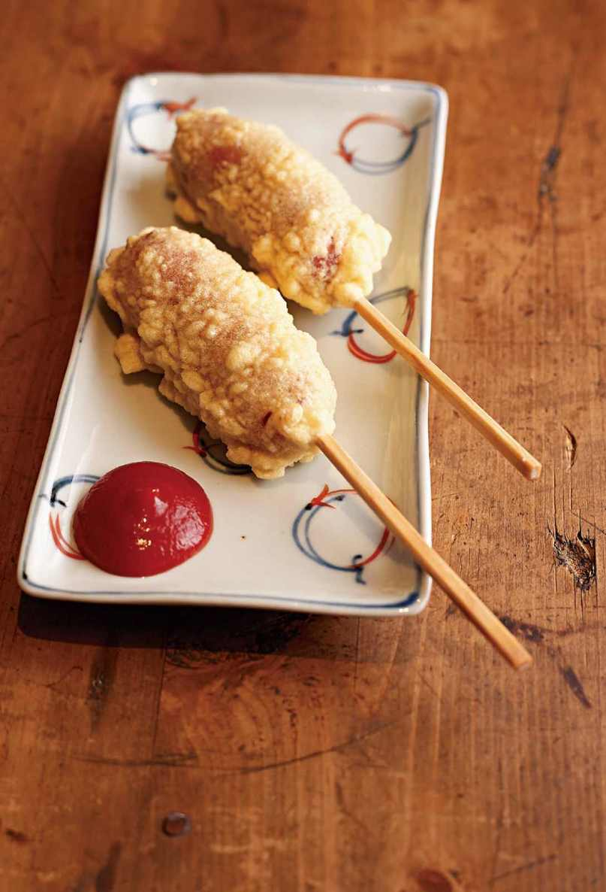
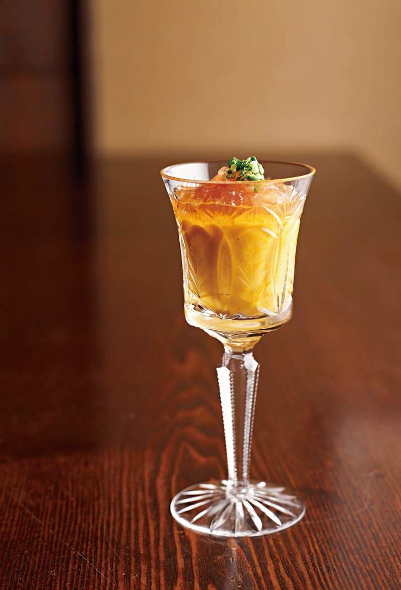

| だから僕は、料理をつくる。 | |
| 笠原 将弘 | |
| (2013) | |
はじめに
この本を見て、ほとんどの方が「誰だ、このおっさん？」と思われていることでしょう。
まさか自分のこれまでの人生が本になるとは、夢にも思いませんでした。
正直、はずかしいです。
東京・品川区の武蔵小山という街で生まれたふつうの男の子が、
ふつうのおっさんになっていくまでのお話です。
ビールでも飲みながら、軽いノリでお読みください。
この本の使い方
●小さじ１＝５㎖、大さじ１＝15㎖、１カップ＝２００㎖です。
●１㎖＝１㏄です。
●火かげんは特に指示のない限り、中火で調理しています。
●「だし」は和風だしのことです。こぶや削り節は好みのもので。
●レシピ上、野菜の「洗う」「皮をむく」などの作業は省略してあります。特に指示のない場合、それらの作業をしてから始めてください。
●油や熱湯の扱いには注意しましょう。
国籍は、武蔵小山!?
生まれも育ちも、そして現在住んでいるのも東京の武蔵小山。親父もおふくろも武蔵小山育ちの生粋の〝ムサコっ子〟。だから、「国籍は？」と聞かれたら、僕は迷わず「武蔵小山です」と答えるだろう（国じゃないけど）。
東洋一ともうたわれた、今でもにぎやかな武蔵小山商店街には、なんでもある。文房具屋、本屋、洋品店などのザ・商店街のラインナップから、サウナや居酒屋、横道に入ると大人しか入れない店やクラブ（もちろん、ＤＪがいないほう）まで。昔はキャバレーやエッチな映画館もあった。
ここが僕の故郷であり、子どものころの遊び場。友達と走り回り、買い物をし、ごはんを食べる。用事のほとんどすべては商店街ですませていたんじゃないかなあ（ちなみに生まれたのも商店街の端にある病院だ）。まさになんでもあり。しかもその「なんでも」の度合いが今どきの言葉でいうと〝半端ない〟らしくて、初めて訪れた人は必ずといっていいほど、その充実度にびっくりする。大人になってから友人の料理人を案内したところ、
「わりと......というか、かなりディープだね。笠原がモンスターに育ったのがわかる！」
と感心しきりだった。なんでもありの人間だということか。はたまた夜の街、飲み屋街が似合うということ？ 生まれついての遊び人？ いずれにしても、僕はほめ言葉と受けとった。
この街の一角で、僕の親父は焼き鳥屋を営んでいた。店名は『とり将』。「とりしょう」と読む。本当は「とりまさ」にする（した）つもりだったらしいけど、お客さんが「とりしょう」と呼んだから、親父も「まあいっか！」って。のちに、親父が亡くなってからＮＴＴに問い合わせると、
「〝とりしょう〟では、ご登録はありません。〝とりまさ〟ならありますけど」。
そのとき僕は初めて、親父が「とりまさ」で店名を登録していたという事実を知ったのだった。
『とり将』の「将」は、「将弘」の「将」だ。僕の名前からつけられた。親父の死後、彼の中学時代の友人に、「賢さん（親父）は、マー君のことがかわいくてしかたがなかったんだ」と言われたことがある。なんともいえないほど照れくさかったのと同時に、実は誇らしかった。
『とり将』の料理は、ひいきめではなく、どれもおいしくてね。店はいつもお客さんで大にぎわい。そこで小さいころからいろいろな大人を見てきたせいか、僕はかなりませたガキに育った。
商店街は、そんな僕にとって大きな意味での家族のような、親戚のような存在。ここの住人は、悪さをすれば怒ってくれるし、いつも気にかけてくれている。頻繁に会わなくても平気なのに、しばらくぶりに会えばあっという間にタイムスリップしたかのような空気が流れる。昨日も会っていたような会話ができる。だからだろうか。僕はこの街を離れることができない。
まずは、そんな愛すべき街での思い出から話を始めようと思う。
武蔵小山純情商店街
思い返すと、親父の店の定休日がくるのが楽しみだったなあ。
その日には、いつも家族そろって、ごはんを食べに出かけた。行き先は、地元の商店街。いつも親父の店に来てくれている常連さんの店に、その日は僕らが食べに行くのだ。
ときには、生意気にも寿司屋のカウンターに座ることもあった。刺し身をつまみながら飲む親父とおふくろの横で、僕はひとり、握りをほお張る。特別にさくらでんぶだけののり巻きを作ってもらったり、「穴子のたれだけをシャリにかけて」なんて無理を言ったり。
この寿司屋『亀八寿司』のおじさんとおばさんも、もちろん『とり将』の常連客。家族ぐるみで親しくしていたのだ。
僕が少し大きくなると、親父がおもしろがって、
「端から順に食べていってごらん！」
なんて言って、店のケースにあるネタを並んでいる順に食べていき、端っこまで食べきって、さらに折り返したこともある。
もっと大きくなると、中トロを頼みすぎて、
「お前、あれがいくらするか知ってんのか！」
と店を出たあとで怒られたこともあるし、
「立ち食いそば屋で腹いっぱいにしてから来い！」
なんて、そのすさまじい食欲にあきれられたこともある。
親父たちのように「刺し身をつまみで」っていうのが当時の僕の憧れでね。早く大人になりたいと思ったものだ。
おばあちゃんとよく行ったのは、雑居ビル内のお好み焼き屋『風車』。ここはお好み焼き屋なのに、なぜか定食メニューも充実していて、僕の定番は、定食＋お好み焼き。とにかくよく食べる少年だったから、実は中学生までは肥満児だったんだよね。でも、自慢じゃないけれど運動は得意で、いわば〝俊敏なデブ〟だった。
ちなみに、お好み焼き屋で生地が入ってくるアルミ製のボウルが小さいのはなぜか。答えは、あまりまぜないほうがいいから......らしい。ボウルがアルミ製なのは、鉄板の上でまぜられるように。そうすればこぼれた具もそのまま焼いて食べられるから。僕にそんなお好み焼きの英才教育を授けてくれたのがこの店。今でも僕は「プロになれるんじゃないか！」と自負するほど、お好み焼きを焼くのがうまい。
そういえば先日、久しぶりに『亀八寿司』に行った。すると、カウンターに座っていたのは、やはり両親の友人だった阪本さん夫婦。偶然の再会で思いがけず、昔話に花が咲いた。
久しぶりに会うのに、僕の子どもたちの名前も覚えていてくれて、
「いくつになったの？ 高校どうするの？」
なんて、相変わらずの感じで心配してくれる。飲んでいたビールがなくなれば、
「マー君、瓶でいい？」
と世話をやいてくれる。この人たちにとっては、僕はずっと「マー君」のまま。親父もおふくろも亡くなってしまった今でも、変わらず温かい。あらためて僕は、武蔵小山商店街に育てられたんだなあ、と思ったのだ。
お調子者だった少年時代
ムツゴロウ王国で働く。
「将来、何になりたい？」と聞かれるたびに、小学生の僕はこう答えていた。将来の夢として僕の頭に浮かんできた最初の職業が、これだったような気がする。
理由はご想像どおり。単純明快。「動物が好きだから」。ただそれだけ。同世代の動物好きな少年少女たちが、みんなムツゴロウ王国に憧れていた時代。僕もご多分にもれることがなかった。動物が大好きだから、ムツゴロウ。不思議なことに、「獣医になりたい！」とか「動物園の飼育係になりたい」と思ったことはない。
ミーハーといわれてしまえばそれまでだけど、当時は真剣そのもの。「ムツゴロウ王国」のことをできる限り調べ上げ、何歳から働けるかなど、自分なりに真面目に考えていたのだから。
ムツゴロウさんと動物たちが登場するテレビ番組に、僕はくぎづけになった。「よ～し、よしよし！」と動物たちと戯れる彼を見るのが好きだった。大好きな動物たちと家族のように、親友のようにじゃれ合う姿から目が離せなかった。獰猛な動物とだってほかの動物と分け隔てなく接しているのもカッコよかった。何より「楽しくて、楽しくてしようがないんだよ！」と全身で発しているムツゴロウさんの子どものような笑顔、動物が好きでたまらないという表情に、僕はノックアウトされたのだと思う。
好きなことを仕事にするっていいな。そんなふうに考えていたのかもしれないし（いや、そこまで考えていないかも）、単純に楽しそうだな～と思っていたのかもしれない（確実にこっちだ）。
でもちょっと格好つけて言うなら、僕は昔から人が喜んだり、楽しんだりしているのを見るのが大好きなんだ。だからムツゴロウさんの笑顔にも心を奪われたんだと思う。もちろんそれ以上に自分が、常におもしろいことをしたいのだけど。
床屋に行けば、ケープをマントみたいに広げてジュディ・オングよろしく走っていたような少年・将弘は、目立ちたがり屋でみんなを笑わせることにこの上ない喜びを感じていた。寡黙な親父によく「お前はいったい誰に似たんだ？」と言われるお調子者だったのである。
とにもかくにも、小学生の僕の頭の中には「料理人」という言葉のかけらもなく、子どもらしい夢を持っていたというわけ。
おばあちゃんの「アメリカンドッグ」
小さいころの僕は、エンターテイナーだった一方で、かなり生意気なガキだった。特に祖父母に対しては。僕は父方母方、どちらの祖父母にとっても初孫だったこともあり、かなり甘やかされていたのだ。
どちらのおばあちゃんも、大好きだった。でも、子どもながらに、こっちのおばあちゃんにはこんなわがままを言っても大丈夫、もう片方のおばあちゃんには......と二人の性格を見極め、態度を変えていたような気がする（ほんとにいやなガキだ）。
父方のおばあちゃんはやさしくて、料理上手。いつも、「あれ作って、これ作って」といろいろな料理をリクエストしては作ってもらっていた。
「今度来るときまでに、あれ、買っといてね！」
なんて、偉そうに用を言いつけることもある。ほとんど命令に近かったと思う。おばあちゃんは、ときにはスーパーを何軒も回って僕が望んだお菓子を探してきてくれる。なのに、僕ときたら特に大喜びするわけでもなく、
「あ、そこおいといて」
と、そっけない。せっかく買ってきてくれたお菓子もすぐに飽きてしまい、その辺に放り投げておく......なんてこともあったと思う。
あるときは、
「僕が寝るまで、背中かいててよ」
と言い、またあるときは、
「30分、耳掃除して！」
なんて威張り散らす。
「マー坊、もう、とるものないのよ！」
とおばあちゃんを困らせることもあった。まるで暴君だ。
ある日、僕はおばあちゃんに「アメリカンドッグを作って」とせがんだ。ソーセージに少し甘いふっくらとした衣をまとわせ、茶色く色づくまでカリカリに揚げてある、あれ。遊園地かどこかで食べたのだろう。
「太いウインナーが棒に刺してあって、揚げたようなやつ。揚げればいいんだよ」
作ってもらうにもかかわらず、態度は限りなくデカイ。
アメリカンドッグなんて見たことも食べたこともないおばあちゃんは、僕の話す「アメリカンドッグ」なるものを一生懸命に想像し、作ってくれた。
だけど、僕の目の前にあらわれたのは......。ぷっくりと丸みをおびた茶色い衣がついているおなじみのものではなく、白っぽくて表面がボコボコした衣がついている、ソーセージの天ぷらのくし刺しだった。
暴君・マー坊は、
「違う！ こんなんじゃない！」
「まったく、おばあちゃんはなんにもわかんないんだから!!」
なんて言いたい放題。
「言われたとおりに作ったんだよ」
と少し悲しそうなおばあちゃんを横目に、プリプリ怒りながらもソーセージの天ぷらをパクつく。
せっかく作ってくれたんだから、もっと喜んであげればよかったな。おいしそうに食べればよかったな。ちゃんとお礼を言えばよかった。
おばあちゃんのアメリカンドッグは、衣がサクサクと揚がっていて、本当はすごくおいしかったんだ。本家のアメリカンドッグとは、全然別モノだったけれど。
『必殺仕置人』と、プロフェッショナルということ
親父が店を開けている時間は、祖父母の家に預けられることが多かった。両親は〝商店街内結婚〟だったので、どちらの実家も徒歩圏内。ごはんを食べて、おじいちゃんおばあちゃんと一緒にテレビで時代劇を見る。そんな日々を送っていたからか、僕はいつの間にか時代劇が大好きになった。
なかでも好きだったのが「必殺シリーズ」の『必殺仕置人』。『暴れん坊将軍』や『水戸黄門』など、もともと地位が高い人が主人公の時代劇には興味がない。そもそも将軍には暴れてほしくないし、水戸黄門が急にあらわれてはいい迷惑、地元で静かに暮らしていてほしいと思っていた。
僕が好きなのは庶民──その中でも、どちらかというと弱めの──が、自分よりもさらに弱い人のために、小ずるいヤツを法にかわって裁く、というストーリー。「仕置人」がまさにそうで、イケメンなんか一人も登場しないけれど、みんなそれぞれ大人の色気があってカッコいい。特に山崎努演じる「念仏の鉄」に、しびれまくった。女と遊びが大好きで情にもろい。でも、ここぞというときには、誰よりも強いんだ（骨接ぎ師なので素手で悪者の骨をはずしてしまう！）。
仕置人たちは、ただの善人ではない。金をもらわないと仕事をしない。ここもなぜか子ども心にグッときたところだ。「きれい事ばかりじゃない。人間は、こういう生き物なんだよ」ということを教えられた気がした。
何より、仲間が危ない目に遭ったときには命をはって助けに行く、人情に厚いところがいい。
似たようなところでは『ゴルゴ13』も好きだ。......というと、殺し屋の話が好きだと誤解されそうだけれど、もちろん、ポイントはそこではない。ふだんそれぞれ違うことをやっているその道のプロフェッショナルが、ここぞというときに集結して多大なる力を発揮する、というのが僕はたまらなく好きなのだ。今現在も雑誌や書籍の製作などで、それぞれのプロ──カメラマンやスタイリストやデザイナー──が集まって一つのモノを作る仕事にかかわる機会があるが、その作業は僕に『必殺仕置人』や『ゴルゴ13』を思い出させる。
話がそれたけれど、僕の理想の男性像は、
〝仕事ができて、遊びも上手。男くさくて、情にもろい〟
つまり昔も今も相変わらず、憧れの男は「念仏の鉄」なのだ。
ちなみに、「必殺シリーズ」の中でも僕のいちばんのおすすめは、『新・必殺仕置人』。ファンの間で最高傑作ともいわれている珠玉の作品だ。ＤＶＤが出ているので、興味のある人はぜひ見てほしい。
ムサコの味「チキンカツ定食」
僕の故郷といえる、武蔵小山商店街。その中でも、知る人ぞ知る伝説の店が『ひなどり食堂』だ。商店街の中の暗黒街（僕がひとりでそう呼んでいた）のような一角にあったバラック小屋の店。中国人であろうお父さんとお母さんが二人でやっている店で、ラーメンもオムライスもチャーハンも冷ややっこも、刺し身もある。今なら、
「なんでもありすぎでしょ!!」
とまちがいなくつっこみを入れていただろう。でも、何でも屋にありがちな「どの料理の味もそこそこ」というのとは違い、『ひなどり食堂』の料理は何を食べてもおいしい。
夜中まで営業しているから、うちの親父は焼き鳥屋を閉めたあとによく飲みに行く。常連さんたちと連れ立ってね。店の常連さんの中には商店街の人も多くて、
「じゃあ、マスターの仕事終わりに、あの店で飲み直そう」
とか、そんな感じだったんじゃないかと思う。で、ときどき僕も連れていってもらうのだ。今思うと教育上あんまりよくないかもしれないけれど、僕はその時間が大好きだった。
『ひなどり食堂』には「牛の刺し身」なんてツウ好みの料理もあって、当時、魚の刺し身も食べられなかった僕が、なぜかこの刺し身ならバクバク食べられた。
「マー君は大人の食べ物が食べられるんだな。牛刺しが食べられるなら、魚の刺し身もイケルだろ！」
とすすめられているうちに、魚の刺し身も好きになる。いつも大人の中にいたから、僕は味覚も性格も必要以上に早く大人になった。ついでに、大人同士の人間関係も垣間見ていた。
小学校３～４年生になると、親父の店が忙しいときなんかは、千円札を握らされて一人で『ひなどり食堂』に行くことが多くなった。親父もおふくろもよく知っている店だから安心だったのだろうし、店に行けば誰かしら知り合いがいて、
「おー、マー君！」
なんて声をかけてくれるから、一人でも全然寂しくない。
『ひなどり食堂』で僕が注文するのは、毎度「チキンカツ定食」。たしか、６００円か７００円だったんじゃないかな。インベーダーゲームをやりながら食べるのがおきまりのスタイルだ。かじると肉汁がジュワ～ッと出てくるチキンカツの味はもちろんだけど、かかっているデミグラスソースみたいなのがうまくてね。店のお父さんの手作りであろうソースは、甘くてコクがあり、少しスパイシー。チキンカツの味を存分に引き立ててくれる。
この定食を気に入っている理由はもう一つあって、つけ合わせのサラダにも手を抜いていないところ。生野菜に缶詰のホワイトアスパラガスが添えてあるだけの、いたって普通のサラダなのに、かかっているマヨネーズ風のドレッシングがこれまためちゃくちゃおいしい。手作りなのでくどくなく、さらりとしているのになめらか。生野菜がそれほど好きじゃなかった僕も、このドレッシングをかければいくらでも食べちゃうという代物。
その後、区画整理で〝暗黒街〟はきれいなビルに建て直され、『ひなどり食堂』も「〇〇飯店」みたいな名前の中華屋さんになった。僕が店に行く回数も激減した。中学生になって親と行動を共にすること自体が少なくなったのも、その理由の一つだろう。そうこうするうちに、店のお父さんが亡くなり、お母さんも年をとり、いつの間にか中華料理屋は閉店。残念ながら、今はもう店の跡形もない。
二度と食べられないと思うからだろうか。ときどき無性に、あの特製デミグラスソースがたっぷりかかったチキンカツが食べたくなる。そして、チキンカツの味を思い出すとき、その味とセットみたいに、『ひなどり食堂』のお父さんとお母さんの顔、常連客とのにぎやかな会話、そして親父とおふくろの笑顔......が思い浮かぶんだ。
中学で出会った恩師のこと
中学３年生になったころ、僕は中学校の先生になろう！ と決めた。「思った」ではなく、当時は「絶対になる」と決めていた。
ムツゴロウ王国からの大方向転換。それもただ「学校の先生になりたい」ではなく「中学校の先生」限定。自分もまだ中学生だっていうのに「小学生はまだまだガキ！ もっと大人、といっても大人になりかけの多感な中学生を教えたい」。そんなふうに思っていた。
理由は、人生の恩師といえるような先生と出会ったから。
その恩師・笠井先生は、僕が中学２年生のときに転任してきた。当時、30歳をちょっと過ぎたくらいだろうか。科目は社会科。ノリもルックスも、たとえるなら高田純次のような感じで、一見するとダンディ。テレビドラマにありがちな熱血教師......ではなくて、どちらかといえばその真逆。いい意味で肩の力が抜けていて、とにかく話がおもしろくて（特に授業以外の話）、僕にとっては初めて出会う「くだらない大人」だった。「くだらない」というと悪口みたいだけれど、大人でもこんなにおもしろおかしく生きていてもいいんだな、ぐらいの意味に思ってほしい。
昨日、街でこんな人を見かけた......。買い物に出かけたら、そこの店員がおもしろくて......。
そんなたわいのない話、日常のささいな出来事も先生の手にかかると、とびきりの笑い話になる。話し方が上手なのもあるかもしれないけれど、なんでもないことをおもしろがっちゃうところや、人物観察の鋭さや物事の見方がとにかくユニークなところを好きになったのだと思う。子どもながらに人物観察が好きだった僕と、少し共通点があったのかもしれない。
そのころの僕は、大人は難しいことばかり考えていると思い込んでいたから、先生の登場は新鮮であり、衝撃的だったのだ。とりわけおもしろかったのが、先生の大学時代のバカ話やくだらない妄想話！ クラリネットの腕前がかなりのものだから、大学が同じだったらまちがいなくサザンオールスターズの桑田佳祐とバンドを組んで、今ごろテレビに出ていた......云々。
もちろん先生を好きになった理由はそれだけじゃない。赴任してきてすぐに、
「みんな自由に読んでいいぞ」
と自分の愛読書をたくさん学校に持ってきてくれたことが大きい。
もともと本好きだったから、それらの本をとにかく夢中で読みあさった。特に、ノンフィクションやエッセイが僕のお気に入り。
東海林さだおのエッセイを読んでは爆笑し、椎名誠の旅やキャンプでのエピソードに憧れ、池波正太郎の食エッセイによだれをたらす......。今も大好きなこの作家たちとの出会いは、いずれも笠井先生がもたらしてくれたもの。
本の中には、先生と同じ人種がたくさんいる。大人になっても、今の自分と同じようにちっぽけなことでおもしろがってＯＫだし、とるに足らないことで一喜一憂してもいいんだ！
僕の人間としてのベース（ものの考え方をはじめ、すべて）をつくったのは、笠井先生との出会いと、あのころ読んだ本の数々ではないかと思う。とにもかくにも料理人以外で僕にいちばん影響を与えてくれた人は、まちがいなく笠井先生だと断言できる。
先生とは今でも仲がよくて、たまに一緒に酒を飲む。「来やすいところがいいと思って」と飯田橋（僕の家からも店からも全然近くない!!）に呼び出されることもあるし、子どもの教育のことやその他いろいろなことを相談すると、親身になって考えてくれたりもする。
先生はもう校長先生になってもいい年だっていうのに、いまだに現役で子どもたちに授業をしている。本人曰く「校長になるための試験を受けるのが面倒くさい」とのことだけど、本当は何より現場が好きなのだと思う。
先生が教えている中学校には、自分たちの国の文化を知る「自国文化学習」なる授業があり、僕は依頼を受けてそこで家庭科（日本料理）を子どもたちに教えたりしている。「お前なら、タダで呼べるから！」というわけだ。
つまり僕の「中学校の先生になりたい」という夢は、形は少し違うけれどかなったことになる。
初めて作った「ガトーショコラ」
よく「いつごろから包丁を持つようになったんですか？」とか「小さいころから料理するのが好きだったんですか？」という質問を受けるので、その答えを少し。
僕の場合、食べることは〝大〟がつくほど好きだったが、料理に興味を持った覚えはほとんどない。
実家の焼き鳥屋の手伝いをすることはたまにあったけれど、完全にこづかい目当て。お客さんにビールを注いだりするくらいで、料理を作りたいと思ったことはない。「これやらせて」とか「料理を教えて」なんて言ったことも、覚えている限り、皆無といっていい。
そんな僕が自分一人で最初から最後まで作ったものといえば、中学生のときの「ガトーショコラ」。
父方の祖父からオーブンレンジをもらったのがきっかけだ。おじいちゃんの家にはすでにオーブンレンジがあって、「もう一台もらったから」と僕の家に運んでくれたのだ。
それが、なぜか僕の部屋におかれることになった（自室にオーブンレンジがあった中学生なんて、日本中探してもなかなか見つからないだろう）。で、添付してあるレシピブックを見ていたら、そこには食いしん坊の僕にはたまらないほど「うまそう」に思えるケーキやクッキーがこれでもか！ というほど載っている。日課のように眺めているうちに、「なんとしても食べたい!!」という欲求に駆られるのだ。しかも、自分で焼けば、小さいころに誰もが一度は抱く夢──ケーキ一台まるごと、自分一人で食べる──がかなえられる！
作ってみると、ガトーショコラはそれほど難しくなかった。スポンジケーキのように卵をしっかり泡立てないと膨らまないということはないし、少々雑に作ってもそれなりの形になる。本のとおりに生クリームといちごも添えて......と。生クリームは泡立てすぎて少々クリーミーさには欠けたけれど、まずまずの出来。
食べてみると、これがなかなかおいしい。自分で作ったというエッセンスも加わり、格別の味に思えた。結局、一人で一台全部を食べきることはできなかったけれど、
「僕って、才能あるかも!?」と調子に乗りやすい笠原少年は気をよくする。
で、また焼いてみる。すると、
「あら、おいしいじゃない」
と、おふくろも僕を調子に乗せる。おもしろがってケーキの型を買ってきてくれて、ますますケーキ作りにハマっていく......というスパイラル現象が起きるわけ。親父まで、
「店で出してみるか！」
なんて言いだす始末。
実際に、焼き鳥屋の常連さんに出してみると、「うまい、うまい」っておいしそうに食べてくれて......。すごくうれしかったなあ。
作ることに興味を持ったのは、これが最初。料理でも、まして日本料理でもなく、ケーキが僕の手作り第一号。「料理人になる」と決める、ずっとずっと前の話である。
それから十数年後。親父から引き継いだ『とり将』のデザートメニューに、「ガトーショコラ」はしっかり定着。何人かのお客さんから「クリスマスに一台まるごと、予約したい」と言われるほど人気が出たのである。
お笑いに憧れた男、料理人を目指す
高校に入ると、僕はラジオ少年になった。友達のお兄さんの影響で、ラジオを聴くこと自体は小学生のころからしていたから、わりと早熟なほうだろう。ちなみに今でもテレビよりも断然ラジオ派。テレビを見る時間がないのもあるけれど、店で料理の下ごしらえをするときにもラジオは欠かせない存在だ。
ビートたけしがＤＪをしていた「オールナイトニッポン」はハガキを書きまくるほどの熱狂的なファン。ちょっとエッチなあんな話やこんな話......。親に隠れてこっそり聴くというシチュエーションも、ワクワク感に拍車をかける。勉強をするフリをしながら、一人でにんまり、ときには思わず大爆笑する時間が、高校生の僕の至福のときだった。一度、ハガキを番組で読まれたことだってある。ちょっとした自慢だ。
そのころ知って憧れたのが〝放送作家〟という職業。ラジオでしゃべるたけしの隣で「たけちゃん！ バンバン（拍手する音）」と、手をたたきながら笑っている高田文夫という人に興味を持ったのだ。たけしの話を聞いて、笑っているだけ！ 特に何かおもしろいことを話すわけでもなく、合いの手を入れる程度。それだけでいいなんて、なんて幸せなんだろう。しかも、たけしには「高田さん」と敬われ、周りからは「高田先生」とあがめられる。おまけにいつも楽しそうだ！
相変わらず僕はやんちゃで、学校の体育館の舞台でパフォーマンスをしてみんなを笑わせたり、あっと言わせたりするのが大好きだった。いつの間にか人見知りになっていたからマンツーマンは苦手だけど、大多数は得意。大人数の前だと、急にテンションが上がって、「こいつらをどうやって喜ばせてやろう」と思ってしまう。根っからのお調子者なのかもしれない。なにしろ中学時代には、目立ちたいがために生徒会副会長にもなるような少年だったから。
そのうちに〝放送作家〟になってたけしみたいな芸人と楽しく仕事をする、という夢は〝お笑い芸人〟そのものに向いていくことになる。
きっかけは毎日一緒に遊んでいた工藤という友人だ。
彼と僕が話をしているのを見て、「二人の掛け合いがおもしろい！」とクラスのみんなが言うようになった。いつもみんなを笑わせる役目、それが僕たちだった。工藤は器用で、顔芸や体を張った芸も得意。持ちネタは口の中で、スナック菓子を縦に回転させるギャグ。その名も「ハッピーターン」。こんなことでも、なぜかみんな毎回大ウケしていた。
学校の内外で遊びほうけて、バカばっかりやって、勉強もろくにせずにいた僕らは、冗談のようだけれど本気で「俺らなら、お笑いいけんじゃね？」って考えるようになる。
ある日、工藤が言った。
「お笑いオーディションに出よう！」
この提案に、僕は燃えた。コンビ名もネタも決まり、ネタ合わせも完璧、とうとうオーディションを明日に控え......という日、夢はあっけなく散った。工藤が胃けいれんを起こしたのだ。原因はまちがいなく、遊びすぎだ。あんなにその気になっていたにもかかわらず、出ばなをくじかれた僕らは、早くも夢を断念する。「そのくらいであきらめられるのか」と思うかもしれないけれど、僕も工藤も一度のチャンスにかけていたのである。実力だけでなく運もあれば、最初で最後のチャンスをものにできる......そんな気持ちだったのだと思う。
気づけば、高３も半ばを過ぎていた。そろそろリアルに進路を決める時期になっていたのだ。お笑いという熱が通り過ぎ、冷静になった僕の頭の中には漠然と「このままいったら板前だなぁ」という考えが浮かんでいた。
その直後ぐらいだろうか。日本のパティシエたちが世界大会に挑むというドキュメンタリー番組を目にしたのは。料理の世界でも、こんなに目立てることがあるのかと、ショックを受けた。だって「世界と戦う！」なんてカッコいいじゃないか！ サッカーでワールドカップに出ることは僕には無理だけれど、パティシエになったら「日の丸を背負って勝負できるかもしれない」。消えていた熱に、火がついたようだった。
どこかで「親父に金をかけさせたくない」との思いもあった。おふくろは僕に大学に進学してほしがっていたけれど、そのおふくろも僕が高１のときに他界した。どんな仕事なのかもよくわからないのに、僕の心は完全に「パティシエ」に傾いていた。
でも、親父にその旨を相談してみると、一蹴。
「料理の世界に入るなら、板前になれ。日本料理なら俺の知り合いを紹介する」
それまでは「好きなことをやれ」が口癖の親父が、僕に意見したのはあとにも先にもこのときだけだった。だからだろうか、「だよね。やっぱそうだよね」と、その言葉はストンと僕の心に入ってきた。
子どものころからずっと親父を見ていたからか。「板前」という言葉が頭の中にチラついていたからか。周りの人たちに「いつかは親父さんの跡を継ぐんだろう」と言われていたからか。全く反発することなく、自分でも不思議なくらいすんなりと、僕はこの道に入ることを決めたのだ。
こうして、親父の知り合いの紹介で、日本でも屈指の名料亭『兆』グループの一つ、『正月屋兆』で修業することが決まった。パティシエから日本料理人へと変化はしたけれど、「世界を相手に勝負する」という目標は、心の中でふつふつと燃え上がっていた。
料理人修業が始まる
高校卒業と同時に、僕は日本料理の名店『兆』の系列店『正月屋兆』に入社する。
同期入社は５人。僕以外は、全員調理師学校を出た人間ばかり。同期の中でもいちばん年下なのが僕。ほかのヤツらのように調理用語も知らないし、包丁の握り方もわからない。僕だけズブの素人。
兆をはじめとする大きな日本料理の店は、調理の種類によってこまかく持ち場が分けられていて、それぞれに名前がついている。「焼き方」とか「煮方」という具合。兆の新人たちはこの持ち場を１週間のローテーションで経験する。しかし最初に言い渡されたのは、そのどこにも属さない「洗い場」。といっても、店に入ったばかりの僕らの仕事は、ドブ掃除となべを洗うこと。それくらいしかできることがないのだ。器を洗うなんて10年早いという感じ。「ひたすら皿を洗う日々がしばらく続くのかな」という僕の想像さえもすぐに覆されたのだ。
それもそのはず、店で使っているような器は、ズブの素人が洗えるような代物ではない。皿洗いは、専門のパートさんの仕事なのだ。器の価値がわかる今なら、当時もしあんな高級な器を洗わされていたら......と考えるだけで身の毛がよだつ。いったいどのくらいの損失を店に負わせていたかわからないからだ。
しばらくすると、ローテーションに乗って、お造り、煮方、焼き方など、それぞれの持ち場のいちばん下につくことが許される。お造り担当の先輩についたときには、一日中、魚のうろこをとるか氷をそぐのが仕事。焼き方の先輩についたら、いいと言われるまで炭をガンガン割り続ける。あるテレビ番組に「未来の巨匠」というコーナーがあるけれど、デフォルメではなくあれが現実。いや、あれ以上かもしれない。冷たくて手が凍えそうでも、うろこまみれになっても、腕が腱鞘炎になりそうでも、ひたすらひとつの作業をやり続けなければならない。
少し慣れてくると、まかない作りも仕事に加わる。これは修業１年目の者の大事な役割。最初は指導係（２年目の人が多い）の先輩につき、教えてもらいながら作る。いわば、まかないの見習いだ。でっかいなべ一つで作れる料理が多く、１週間に一度はカレーと決まっていて、ほかには具だくさんの豚汁や肉じゃがなどが定番。それ以外は自分で考えた１週間分のメニュー案を指導係に見せ、ＧＯが出たら材料を発注する。言葉にすると簡単そうだが、最初はなかなかスムーズにいかない。ときには、
「この日は、この料理は無理。もう一度考え直し！」
と先輩にダメ出しされることもある。というのも、「まかないを作る時間」なんてものが設けられているのでも、まかない当番だからとふだんの業務を免除されることもないからだ。まかない作りは通常業務の合間、しかも、決まった時間までに作らなくてはならない。だから当然、凝った料理を作る時間がない日もある。当日のお客さまの予約状況を何よりも考慮し、まかないのメニューを決めなければならないのだ。忙しい日には簡単な料理を、暇な日にはちょっと手をかけて。
仕事のすきを見て、いかに手を抜きながらうまいものを作るか。ここに力量があらわれる。
そんなふうに、まかないの基本をたたき込まれ、少しすると独り立ちさせてもらえて、自分一人で40人分の食事を作るようになる。当番は１週間ずつ。自分がまかないを作る週は、それはそれはドキドキもので、朝からなんとなく落ち着かない。料理長に自分が作った料理を食べてもらえるなんてめったにない、うれしいことのはずなのだが、
「今日はマズイな～」
と言われている者や、夕食の時間までに作り終わらずにしかられる者をいやというほど見ていたからだ。
でも、僕のまかないはまあまあ評判がいいほうで、
「お前は高校を出たばかりなのに、味つけはなかなかだな～」
なんてほめられることも多かった。これはまちがいなく、親父のおかげ。料理人である親父の料理を毎日食べていた僕には、ウマイ味のストライクゾーンみたいなのが知らず知らずのうちに身についていたのだと思う。
よく作ったのは、しょうが焼きや麻婆豆腐。少し慣れてきて、「たまには変わったものを作ったら、みんな喜んでくれるかな」と得意げにパスタを作り、ソースを５種用意してみると、
「お前、暇なのか！」
と怒られる。やりすぎは禁物だ。
必要以上に手間をかけるのはダメ。手抜きはもってのほか。このさじかげんが難しい。
料理人にとっていちばん大切なのは料理の腕、というのは言わずもがなだけど、それだけでは務まらない。状況を瞬時で判断し、状況に応じて作る。いわゆるバランス感覚というやつだろうか。下働きを通して、僕が学んだことの一つだ。
入社式のメニュー
兆の入社式のことは今でもよく覚えている。高校を卒業したばかりの僕は、かつて経験したことがないほど緊張していた。ずっと地元、武蔵小山の学校に通っていたので、小学校から高校まで一緒の幼なじみが多い。知らない人の間にポツンと一人で入っていった経験がない。親父の紹介だから変なことはできない......。右手と右足が同時に出てしまうくらいカチンコチンだった。
料理長のあいさつが終わり、「昼食」として店の献立が供された。兆の入社式の恒例行事だ。
ごま豆腐、ちらし寿司、白魚しんじょうのお椀、果物のゼリー寄せ......。今まで食べたことのないような美しい料理が並ぶ。
ごま豆腐を口に運んでみる。ほどよい弾力があり、ごまのうまみと香りがギュッと凝縮されている。親父がよく言う「丁寧な仕事をしている」というのは、このことではないのか！ よくわからないにもかかわらず、僕は偉そうに感心したりする。
お椀は、見た目の美しさにまず圧倒される。澄んだ汁の中に、白いしんじょうがポッと浮かんで見え、「これぞ日本料理！」と感動。口に含むと、だしのおいしさを感じる。
「一番だしのおいしさとはこれなのか。すげー!!」
心の中で叫んでいた。しみじみとおいしく、汁を飲みほすのがもったいないほどだ。白魚のしんじょうは、ふんわりとしながらも少しぷりっとした弾力があって、口の中に入れると白魚のかすかな甘みを残しながらすっとなくなる。「早春だから、白魚か。なるほど、さすが季節感を大切にする日本料理」と、またまたよくわからないわりには感心しきり。
一品一品、上品なおいしさにあふれている。これが、日本料理なんだ。僕が飛び込む世界は、こういう一流の世界なのだ。修業をすれば、自分にもこんな料理が作れるのだろうか。
それまでは、チェーン店のハンバーガーやラーメンを食べては、「あそこのハンバーガーは、ソースがうまい」とか「あのラーメン屋のスープが最高。鶏ガラスープのうまみがよく出ている！」とか何とか、知ったふうに話していたけれど......。今日味わった日本料理のだしのおいしさは全く次元が違う。生まれて初めて、目からうろこが落ちる思いがした。
デザートの果物のゼリー寄せがとどめを刺した。透明のゼリーから、色とりどりのフルーツが顔を出していて、キラキラとまるで宝石のよう。ゼリーの下に敷いてある濃厚なカスタードソースが、味わいをよりリッチにしている。
いつしか緊張は興奮へと変わっていた。このときの高揚感は、今でも鮮明に覚えている。こんなすごい店で修業ができるなんて！ とうれしくなったのだ。18歳の春のことだった。
料理人修業とは？
料理人の修業について少しふれておこう。
当たり前ながら、修業に学校のようなカリキュラムは存在しない。１年目にこの技術を学び、２年目になったらここまで......と修業内容が決められているわけではないのだ。教えてもらうのは、最低限の店のしきたりのようなもののみ。この最低限のことさえ、メモをとろうものなら、「ここは学校じゃねえ」という怒声が飛んでくる。だから、僕らは同じ内容を何度も聞かなくていいように、必死で頭の中に詰め込む。
テレビドラマなどで、料理人はその技術や味を先輩や親方から教わるものではなく、「盗むもの」といわれるけれど、まさにそれ。与えられた任務をこなしながらも、常に先輩たちの手つきや動きを目で追い、覚えていく。ひらめの五枚おろしも、鱧の骨切りも、懇切丁寧に手とり足とり教えてくれるわけではないし、できるまで特訓をしてくれるわけではないのだから、観察して（それも盗み見！）覚えるしかないのだ。それがこの世界──料理人──の常識。
観察（盗み見）の成果が試されるときは、ある日突然、予告もなしに訪れる。たいていは、店があまり忙しくないときが多い。
「お前、ちょっと魚をおろしてみるか」
このチャンスをものにできれば（なんとか形になれば）次からも「じゃあ、お前これやっといて」と頼まれるようになる。こうやって、ほんの少しずつ先輩たちの信頼を得ていき、徐々にいろいろな仕事をまかされるようになるのだ。
でも、逆にチャンスを生かせないと悲惨なことになる。
「お前、今まで何を見てたの？」
とあきれられてしまうのだ。
失敗すれば先輩からこっぴどくしかられ、それだけでなく指示を出した先輩の責任になり、先輩までもが料理長に怒られる。だから、先輩たちはそれなりの覚悟を持って、新人である僕らに仕事をやらせてくれる。
「できません」「やり方がわかりません」なんて口が裂けても言えないし、
「忙しくて見ている暇がありませんでした！」
ではすまされないのだ。そして、失敗が何度も続こうものなら、
「お前、もう俺の下にこないで！」
と、最終通告にも似た言葉を浴びせられる。
仕事ができるヤツにはどんどん仕事が回ってくる。できないヤツはその逆。仕事を覚えるために修業している僕らにとって、仕事が回ってこないことは「なぜ、ここにいるのか」という存在意義にかかわってくる。だから僕らはいつ来るかわからないチャンスにこたえられるよう、炭をおこしながら、氷を削りながら、先輩の仕事を盗み見て覚え、こっそり練習して自分のものにしておかなければならない。すべては早くいろいろな仕事を与えてもらうため、自分の技術を上げるためにほかならない。
修業はあくまでも「させていただいている」のであって、「やらされている」のではない。
入社式に料理長は、こう言っていた。
「お前たちは今日からお金をもらうんだから、店の役に立たなければならない」
聞いた当初は、「そりゃあ、そうだろう」と思っていたけれど、この当たり前のことがなかなか難しいのだと、僕らはすぐに思い知る。そして、料理人修業は「ハードボイルドな世界」だと気づくのに、そう時間はかからなかった。
死ぬほど作った「鯛茶漬け」
修業を始めて数カ月したころ、「鯛茶作り」をする日々がやってきた。
僕の働いていた店は新宿の百貨店の中にあって、地下の食料品売り場でも鯛茶漬けを販売している。ときどき教育係の先輩と二人で、１週間交替で売り場に派遣されるのだ。
兆はもともと鯛茶漬けの専門店として始まった料亭。鯛茶漬けは、いわば看板料理。地下の食料品売り場とはいえ、いっさい手は抜かない。本格的な味を提供することを身上としている。
売り場はガラス張りになっていて、調理する僕らの実演がお客さんから見えるのがウリ。作りおきはせず、注文を受けてから、秘伝のごまじょうゆを鯛にからめるのだ。お客さんが見ているところで鯛をおろすなんて、板前として腕の見せどころでもある。
１日に作る鯛茶漬けの数は50食から１００食くらい。次から次へと鯛を準備しないと間に合わない。まるで、野球でいう１０００本ノックだ。とはいえ、いつもはなかなか魚をおろさせてもらえない僕としてはうれしくもあった。思う存分、魚にさわれるのだから。余談だけど、このときさんざんやったから、鯛をおろすのは大得意。日本でいちばんうまいんじゃないかってくらい。
おなかがすくと、鯛の切れ端に秘伝のごまじょうゆをからめてつまみ食い。これがおいしくて、おいしくて。ちなみに、ごまじょうゆは「秘伝」というだけあって、最初は材料も分量も教えてもらえない。何がどんな割合で入っているのかを探り当てようと、自分なりに考えたりもした。
兆自慢の鯛茶漬けは、温かいごはんの上に、ごまじょうゆをからめた鯛をのせ、アツアツの緑茶をかけて食べる。お茶をかけたとたん、ごまの香ばしい風味がフワ～ッと広がり、同時に鯛の色がサ～ッと変わる。刺し身でもなく加熱したのとも違う、少し半生のような状態の鯛を、ごはんと一緒にサラサラ～ッとかっ込むと、緑茶と鯛とごまじょうゆが三位一体となって、口の中がおいしさで満ちあふれる。思わず目をつむり、「う～ん」とうっとりしてしまうほど。
鯛茶漬けをひたすら作っていた日々のことを考えると、僕は教育係だった中島さんのことを思い出す。店の寮の二段ベッドの上と下という関係で、築地に買い物に行くのも、まかないを作るのも一緒（僕が独り立ちするまでね）。休みの日も、よく一緒に新宿の街をプラプラしたものだ。店も新宿なのに、僕らは休みの日もいつも新宿で遊んでいた。
安上がりにお茶を飲む方法も教わった。中島さんは「お茶しようぜ」と言いながら「回転寿司」に入るのだ。回転寿司なら、寿司を一皿食べるだけでお茶が飲み放題というわけだ。
楽しいこと、つらかったこと、修業時代のあれこれが走馬灯のように浮かび、僕は思わず襟をピッと正す。「鯛茶漬け」は、いつでもあの時代の気分に引き戻してくれる。
カッコいい先輩たち
カッコいい。
料理にしても、言動にしても、生き方も。僕は何かを判断するときに「カッコいいかどうか」を基準に考えることが多い。
その理由は、修業時代にカッコいい先輩たちに出会ったことにも関係しているだろう。それまで僕の思うたくさんのカッコいい男＝親父だった。それは永遠に変わらない。でも修業先で出会ったのは、親父とはまた違う強烈な個性を持った男たち。
彼らは、僕にとって初めて出会う「怖い大人たち」でもあった。僕ら後輩に対して甘さはいっさいない。容赦なし。よく怒られてはムカつき、「今に見てろ！」と思ったこともある。でも修業を続けるうちに、仕事も遊びも超一流の彼らがいつしか僕の理想になっていったのだ。
副料理長で煮方の大将だった北本さん。北本さんを一言であらわすなら「クール」。後輩たちを怒るときでさえ声を荒らげないし、手も出さない。僕がほかの先輩にぶんなぐられていると「もう、やめとけよ！」と必ず助け舟を出してくれる。ルックスも涼しげで、よくいえば少年隊のヒガシが年をとった感じ。控えめで、ふだんは料理長のよきサポート役。でも、料理長が不在のときには店全体をピシッとまとめることもできる。僕とは年が離れていたので、さほど親しい間柄ではなかったけれど、僕はひそかに憧れていたのだ。いや、僕だけではない。ホールで働いている20代の女の子にも、北本さんは絶大な人気があった。寡黙で仕事ができる。こんな男がいたら、男でも女でもほれないわけがない！
寮では、昔ながらの肌色のもも引きなんかはいているさえないオヤジ。仕事のときのキリッとした姿とのギャップがたまらなく、そこがより魅力になっていたんだ。今どきの言葉で言うなら〝萌える〟感じだろうか。
生まれて初めてドンペリを飲ませてくれたのも、北本さんだ。たまたま、僕の誕生日がもうすぐと知って「お祝いしようや！」と、ごちそうしてくれた。「ドンペリ!?」と聞いただけで舞い上がってしまった僕は、残念ながら味なんかはよく覚えていないんだけど。１杯飲んだら「これからデートだから」とさっさと帰ってしまう、そのそっけなさもカッコいい。
僕が１年目のときに５年目くらいの先輩だった西村さんには、それこそ「テレビドラマか！」というくらい、よくひっぱたかれた。だから修業時代にいちばん「今に見てろ」と思ったのも（!!）西村さんだけれど、今にして思えばあれが修業の正しい形だった気がするし、あの時代があるからこそ今の自分があると思える。何より、怒られるようなことをしていた自分が悪い。
先輩の中でいちばん仲がよかったのも西村さんで、修業３、４年目になったころにはよくつるんで遊んでいた。伝説のディスコ・ジュリアナ東京にも、何度も一緒に遊びに行ったっけ。仲がよかったから一緒に遊んだことばかり思い出すけれど、盛りつけがとびきり上手なだけでなく、料理センスがバツグン（僕が言うのも、おこがましいけれど）。仕事面でも大尊敬している先輩だ。そればかりでなく、一人っ子の僕にとっては頼りになるアニキのような存在。自分の店を出そうと思ったときには、そのときすでに独立を果たしていた西村さんに相談するため、京都まで出かけたほどだ。
そして、料理長の倉橋さん。一言で言うならハチャメチャ。バイオレンス（北野映画の登場人物を地でいくような）。めちゃくちゃ厳しくて、怖いけれど、超絶的に仕事ができる。字も絵もうまいし、花をいけるのも上手。こういう人を天才というんだな、と思ったものだ。一癖も二癖もある板場の人間をまとめ上げる、カリスマ性もある。
口癖は、
「俺が言ったとおりにやれば、何でもうまくいくんや」
そういえば、一度一緒にジュリアナに行ったことがあるけれど、踊りもうまかったなあ。
倉橋さんの人柄をあらわすエピソードとして忘れられないのが、修業３年目の社員旅行だ。
草津温泉に行った僕らは、しょぼいストリップ劇場──自分たちのおふくろくらいの年齢の踊り子ばかり──で、ガラの悪い大学生グループと遭遇し、ひょんなことから乱闘寸前になってしまう。原因は、本当にささいなこと。口火を切ったのは僕だった。彼らのからかうような様子に、思わず「調子こいてんじゃね～よ」と言ってしまったのだ。その言葉に端を発し、それまでのみんなのイライラが爆発。全員の浴衣ははだけまくり、ストリップ劇場は一気に修羅場と化した。
すると、倉橋さんが僕らを一喝し、相手の大学生には頭を下げつつ大人の対応をし、ほんの数秒でその場を丸く収めたのだ。大学生たちは悔しまぎれに、
「お前らのボス、意気地ねえな」
と捨てゼリフを残して去っていった。その一言で、再び怒りがヒートアップしかけた僕たちに、倉橋さんは言った。
「ごめんな、お前らにケンカさせてやれなくて」
騒動を起こしたら、店の名に傷がつく。せっかく社員旅行に行かせてくれたお店に対して示しがつかない。誰よりもバイオレンスな倉橋さんのこと、本当はいちばん悔しかっただろう。料理長の思いが伝わり、僕たちは声を出して泣いた。
ハチャメチャだけど、男っぽい。それが倉橋さんだ。
こんなカッコいい先輩たちとの出会いが、僕をいっぱしの大人にしてくれたんだと思う。
言葉づかい、社会のルール、気のつかい方、場の雰囲気を即座に感じとること......。社会に出て必要なことのすべてを、僕は兆の先輩たちに教えてもらった。
的はずれな探究心
修業を始めたばかりのとき、僕は常に負い目を感じていた。すでに書いたとおり、同期は僕以外調理師専門学校を卒業したやつらばかり。修業を始めた時点で、自分は一歩も二歩もみんなよりも出遅れている。だから、人一倍努力をしなければおいていかれてしまう、そんなふうに思っていたのだ。
高校生のときは、「よくあそこまで！」と自分でも感心するくらい、まあ勉強しなかった。親に言われてしぶしぶ......という感じで、真剣に机に向かった記憶なんか微塵もない。なのに、料理人の修業が始まったとたん、僕は自分から進んで勉強をするようになった。
親父の影響か、僕は昔から「男は仕事ができてナンボ」と思っているところがあって、仕事だけは頑張ろう、この店にいる間に何かを学びたい、吸収したいと思っていた。社会に出てからの勉強は誰のためでもない、己のため。同期には負けたくないし、先輩だって蹴落としたい。僕の目指すのはあくまで「世界」。「世界で戦える腕」を持ちたいと思っていたのだ。修業先では、みんながいい意味でガツガツしていたので、それもいい刺激になったのだと思う。
ペーペーの僕らにとって、「魚をおろす」のは、大げさに言えば雲の上の仕事。でも、少しでもうまくなりたい僕らは、市場に材料を発注するときにあえて少しだけ余分に注文し、冷蔵庫の奥に隠しておいたものだ。料理長や上の先輩が帰ってから練習をし、証拠隠滅のためにみんなで食べる、そんな日々を送っていた（時効だから許してください）。休みの日に家に帰ると、親父に魚のことを聞いたり、おろし方を習ったり。親父は魚について詳しかったから、その点で僕はかなりラッキーだったと思う。
修業５年目になって寮を出てからは、自宅に飲みに集まる高校時代の同級生に「つまみ」の名目で、いろいろな料理を作ってふるまった。単純に「飲むには、つまみがなくちゃ」と思ったのが半分、あとの半分は本やテレビで得た知識を早く試してみたいという気持ち。遊びに来る同級生を実験台に、店で作れないような料理にチャレンジしたかったのだ。でも、それを作るだけの技術もなければ、自分なりの考えなんてまるでなし！ 「料理とはこういうもの」ということがまるでわかっていないのに、浅い知識だけで「なんちゃって料理」を作るのだからおいしいわけがない。しかも、僕が作っていたのは、小じゃれた海外の調味料──バルサミコ酢やワインビネガーなど──を使った料理ばかり。同級生たちに、
「あれ？ 笠原って、日本料理の修業してたんじゃなかったっけ？」
と言われながらも、目新しい料理にばかり目がいっていたのだ。今どきの調味料を使うことで、優越感に浸りたかったのだ（誰に対しての優越感なのかは、いまだにわからないけれど）。でも、同級生はみんな辛口で、遠慮なく、平気で「まずい！」なんて言ってくる。
今考えると「よく、あんなのを人に出していたな」と恥ずかしくなるような料理ばかり。自分では「勉強している」つもりだけど、それは残念ながら「つもり」でしかなく、かなり的はずれなことばかりをしていたと思う。ただ、あのときの料理に対する探究心、貪欲さだけは相当なものだった。
料理長の一言
「日本料理も中途半端なくせに、なんでも知っているふりしてカッコつけてんじゃねえ。知っているのと、できるのは違うからな」
料理長に言われたことの中でも、もっとも僕の心に突き刺さっている言葉だ。正確にいうなら、言われた当初は言葉の表面的な意味しか理解できなかったのだけれど。
修業時代も何年目かに入ると、僕は店で一人スカしていた。僕の目には先輩たちがあまりに勉強していないように見え、それに対して反発心のようなものを抱いていたのだ。昼休みには昼寝をしているか、遊びの話。だから、料理人は「やくざ者」みたいに言われるんだ。そう思っていた。
「料理人って、そんなんじゃねえだろ！」「それじゃ、だめだろ！」
調理師学校にも行かず、料理のことを何も知らない状態で店に修業に入った僕にとって、少しずついろいろな仕事をまかされるようになってきたのがうれしく、何かを吸収するのが楽しくてしかたがなかった時期でもあった。
ちょうどそのころ、テレビで『料理の鉄人』が始まった。こんな世界もあったのか。華やかな空気に憧れを抱くと同時に、見るもの、聞くもの、すべてが自分の身になる。そんな気がしていた。
当時の僕は思い出すと恥ずかしいくらい調子に乗っていて、料理長が休みのときに担当のデザートに自分なりのアレンジを加えたり、兆では絶対にやらないような盛りつけをして得意げにお客さんに出していた。料理長は、たぶんそんなことにも気づいていたのだろう。でも、いつもは見て見ぬふりをし、大目に見てくれていた。なのに、僕ときたら！ どんどん調子に乗り、休憩時間にこれみよがしに日本料理ではない料理本を持ち歩き、「僕はアンタたちとは違う」という生意気な雰囲気をプンプン振りまいていたのだ。そしてついに料理長が言ったのが冒頭の一言。
本を読んだだけでわかった気になるな。勘違いするな。知識があるのと、それができるかどうかは全く違うことを自覚しろ。料理長はそんなことが言いたかったのだろう。しかも、僕は目新しいことにばかり気をとられ、本分を忘れかけていた。
「お前が勉強するべきは日本料理。日本料理を学ぶために、お前はここに修業に来ているんだろ！」
そんな思いもあったのだと思う。言われた当初は、「うるせえな」としか思わなかったけれど、武蔵小山に戻って『とり将』を継いだころ、「知っているのと、できるのは違う」という料理長の言葉の本当の意味を理解することになるのだった。
初めての挫折!?
目指すは世界！ の僕に、修業を始めて５、６年目のころ、チャンスが訪れる。アメリカ大使館から「公邸料理人にならないか」という話が、店に舞い込んできたのだ。
アメリカ。公邸料理人。僕が描いていた夢の舞台！ 有名なイタリアンシェフも公邸料理人だったっていうのを、雑誌か何かで読んだことがある。
誰よりも努力をしてきたつもりだったし、仕事の腕にもそれなりに自信がついてきた。選ばれるのは、僕だ！ そう思っていた。なのに......店が選んだのは別の人間。よりによって、僕と同期入社のヤツだった。同期にだけは負けたくないと思っていた僕にとって、これは屈辱以外の何物でもなかった。確かにヤツは仕事ができるけれど......。僕との違いは何だろう？ 僕が選ばれなかったわけは？ 一人思い悩んだ。たぶん、いろいろな理由があったに違いないのだが、決定的な理由は「調理師免許をまだ持っていない」ことだった。どんな理由にせよ......僕は打ちひしがれた。
でも今思えば、このときの悔しい経験が僕を成長させてくれたのだと思う。というのも、今のままではいけない、料理人として必要なことはすべて知っておこう、勉強しておこうという気持ちが、以前よりも強く僕に芽生えたから。
日本料理の本をあらためて読みあさりだしたのもこのころ。もともと本はたくさん読んでいたけれど、日本料理について真剣に勉強し始めた。日本料理とちゃんと向き合い始めた、というべきか。店の休み時間になると、近所の大きな書店に行き、料理のコーナーに陣どって立ち読みをし（専門料理の本は高く、当時の僕にはとても手が届かなかったのだ）、店にある日本料理書を次から次へと吸収していった。
なかでも、店の創業者である湯木貞一著『兆味ばなし』は、僕をひきつけてやまなかった。素材の扱い方や季節ごとの料理、料理に対する姿勢。兆を一代で築いたご主人の料理哲学。「自分の店を開いたとき、つくづくこんないい仕事はないと思いました。自分の店を持てば、好きな食材を使い、好きな器に盛ることができる。それは、なんて素晴らしいことでしょうか」という言葉。
書かれているすべてが、僕の心にビンビン響いた。料理の技術はもちろん、器のこと、掛け軸のこと、花のこと、漢字......日本の文化すべてを知らないと日本料理の本質を理解できないし、作ることもできない。日本料理の奥深さをほんの少しだけれど理解したことで、ますます日本料理に興味がわき、誇りさえ感じ始めたのだ。「日本料理ってカッコいい！」と心の底から思えたのだ。
そして、少なくとも10年間はこの店で修業を続けよう、と決意を新たにしたのだった。

アメリカンドッグ
材料（作りやすい分量）
フランクフルト...４本
Ａ 卵...１個
水...１／２カップ
小麦粉...１００ｇ
小麦粉...適量
揚げ油...適量
作り方
１ Ａはさっくりとまぜる。
２ フランクフルトに割り箸を刺し、小麦粉を薄くまぶす。
３ 揚げ油を１７０度に熱し、②を①にくぐらせて入れ、３分ほど揚げる。油をきり、好みでトマトケチャップを添える。
チキンカツ
材料（２人分）
鶏もも肉...１枚
塩、こしょう...各少々
小麦粉、パン粉...各適量
Ａ 卵...１個
牛乳...大さじ１
Ｂ トマトケチャップ...大さじ３
しょうゆ...大さじ１・５
ウスターソース...大さじ１
砂糖...小さじ１
Ｃ 卵黄...１個分
塩、酢...各少々
サラダ油...適量
揚げ油...適量
つけ合わせ
キャベツのせん切り...適量
きゅうりの斜め切り...１／２本分
トマトのくし形切り...１／４個分
ホワイトアスパラガス（缶詰）...適量
パセリ...少々
作り方
１ 鶏肉は余分な脂と筋をとり、塩、こしょうで下味をつけ、小麦粉、まぜ合わせたＡ、パン粉の順に衣をつける。
２ Ｂはまぜ合わせる。Ｃはしっかりまぜて乳化させる。
３ 揚げ油を１７０度に熱し、①を７～８分揚げる。
４ ③を一口大に切り、つけ合わせとともに器に盛る。チキンカツにＢをかけ、野菜にＣをかけ、好みでねりがらしを添える。
・ごはん、みそ汁、漬け物を添えて定食にする。
ガトーショコラ
材料（21×21㎝の型１台分）
チョコレート（ビター）...１５０ｇ
バター（食塩不使用）...１５０ｇ
卵...４個
砂糖...１４０ｇ
ココア...50ｇ
粉糖...適量
生クリーム...１／２カップ
ミント...少々
いちご...適量
準備
型にクッキングシートを敷く。
オーブンを１６０度に温める。
卵を卵黄と卵白に分ける。
作り方
１ チョコレート、バターは刻んでボウルに入れ、湯せんにかけてとかす。とけたら人肌くらいに冷ます。
２ 別のボウルに卵黄、砂糖70ｇを入れ、湯せんにかけながらもったりするまで泡立てる。
３ ①に②を加え、ココアを加えてさらにまぜる。
４ 別のボウルに卵白、砂糖70ｇを入れ、六分立て（泡立て器を持ち上げると、筋がついてすぐに消える状態）にする。
５ ③に④を加え、しっかりとまぜる。
６ 型に⑤を流し入れ、１６０度のオーブンで約50分焼く。
７ あら熱がとれたら型からはずし、ケーキクーラーの上にのせて冷まし、食べやすく切って器に盛る。粉糖を振り、泡立てた生クリーム、ミント、いちごを添える。
鯛茶漬け
材料（２人分）
鯛（刺し身用）...１さく（１００ｇ）
ごはん...適量
ごまだれ
いり白ごま...２５０ｇ
煮きり酒...１カップ
しょうゆ...１８０㎖
砂糖...大さじ１
しょうゆ...少々
緑茶...適量
塩...少々
わさび、刻みのり、ぶぶあられ...各適量
※「煮きり酒」...日本酒をなべに入れて火にかけ、アルコール分をとばして、アルコール臭をなくしたもの。
作り方
１ ごまだれを作る。ごまはフライパンで茶色くなるまでいり、ミキサーにかけてこまかく砕く。煮きり酒、しょうゆ、砂糖を加えてのばす。
２ 鯛は一口大のそぎ切りにし、しょうゆをからめ、①であえる。器に盛り、わさびをのせる。
３ ごはんに②をのせ、塩を入れた緑茶を注ぎ、のり、ぶぶあられをかけて食べる。
しんじょうのお椀
材料（４人分）
ほたて貝柱...４個
白身魚のすり身...２００ｇ
煮きり酒...50㎖
かたくり粉、塩...各少々
吸い地
だし...６００㎖
薄口しょうゆ...小さじ１
酒...大さじ１
塩...ひとつまみ
しいたけ、三つ葉など好みの具...適量
※「煮きり酒」...日本酒をなべに入れて火にかけ、アルコール分をとばして、アルコール臭をなくしたもの。
作り方
１ ほたては１㎝角に切り、かたくり粉をまぶす。
２ 白身魚のすり身は煮きり酒でのばし、塩で調味する。①を加えてまぜ合わせ、４等分して丸め、バットや耐熱皿に並べる。
３ 蒸気の上がった蒸し器に②を入れ、15分ほど蒸す。
４ なべに吸い地の材料を入れて火にかけ、好みの具を入れて温める。
５ お椀に③をおき、④を注ぐ。
※入社式のエピソードは「白魚しんじょうのお椀」ですが、紹介するレシピは季節を問わず手に入りやすいほたてを使ったしんじょうです。
果物のゼリー寄せ
材料（18×18㎝の型１個分）
いちご、メロン、パパイヤ、グレープフルーツなど好みの果物...各適量
ワインゼリー
白ワイン...３カップ
粉ゼラチン...25ｇ
水...１６０㎖
砂糖...１００ｇ
コアントロー...60㎖
ブランデー...大さじ１
カスタードソース
卵黄...５個分
砂糖...30ｇ
生クリーム...１／２カップ
レモン汁...大さじ１
コアントロー...大さじ１／２
バニラエッセンス...少々
作り方
１ ワインゼリーを作る。白ワインはなべに入れて火にかけ、アルコール分をとばす。水少々（分量外）でふやかしたゼラチン、水、砂糖を加えて煮とかす。冷めたらコアントロー、ブランデーを加える。
２ 果物は一口大に切り、ラップを敷いた型に並べ、①を流し入れ、冷やし固める。
３ カスタードソースを作る。ボウルに卵黄、砂糖を入れ、湯せんにかけて白くもったりするまで泡立てて、冷やす。
４ 生クリームを七分立て（もったりする程度）に泡立て、③をまぜ、レモン汁、コアントロー、バニラエッセンスを加えてまぜる。
５ ②が固まったら型から出して切り分け、④のソースを敷いた器にのせる。
暗黒時代
28歳の僕を、思いがけない出来事が襲う。
親父が、病気で亡くなったのだ。
修業先では自分の役割もできてきて、仕事が楽しくなってきたころ。これから親父に親孝行できるかな。そんなふうに思い始めたころだった。
一人っ子の僕は、ほとんどの一人っ子がそうであるように、親に対しての責任感のようなものが人一倍強い。とにかく早く親にラクをさせてあげたいと考えていたし、ちょっと具体的なことでいえば、早く孫の顔を見せてあげたい......とかね。なんせ、僕しか親父に親孝行できる人間はいないのだから。
厳しい修業に耐えて早く料理の道を究めたい、という野望には、今にしてみれば早く親父を安心させたかった、という気持ちがまじっていたのかもしれない。だからその死は僕にとって、まさに青天の霹靂だった。
親父が亡くなったとき、僕の頭に浮かんだのは、
「『とり将』を継ごう」
ということだった。それが、自分の「使命」であると考えたのだ。
それまでは「親父の店を継ごう」なんて、一度も考えたことがなかったのに......だ。単純に親父の店が好きだったのもある。店の雰囲気はもとより、お客さんに接している親父を誇らしく思っていたのもある。
でも、何より、そのときの僕は、
「親父が大事にしていた店を、なくしたくない。なくすなんてできない」
という気持ちでいっぱいになったのだ。
それからは、自分の進路に対して迷いは全くなくなった。『とり将』を継ぐべくまっしぐらに突き進んでいった。
倉橋さんや先輩たちは、こころよく僕を送り出してくれた。
『正月屋兆』に入って９年目。
「10年はこの店で修業をしよう」と決心した直後の出来事だった。
武蔵小山に戻って店を開くと、高校の同級生をはじめ、幼なじみたちが、
「笠原！ 店、継いだんだって！」
と、連日のように訪れてくれた。
親父が店に立っていたころによく通ってくれていた常連のお客さんも、「待ってました！」とばかりに、入れかわり立ちかわりで来店してくれる。「えっ！ 最初からこんなにうまくいっちゃっていいの？」と自分でもびっくりするくらいだった。
でも、店を軌道に乗せるのはそう簡単ではないのだと、僕はすぐに気づかされる。
最初のにぎわいは、いわゆる開店景気（＝オープンしたては知り合いや、物珍しくて客が入ること）で、ずっとは続かなかった。僕を応援するために来てくれていた同級生といえば、20代後半の若造。まだ給料も安く、金もそんなにあるわけない。彼らからしてみたら、チェーンの居酒屋のほうが安いし、たっぷり飲んで食べられる。自分の友人や同僚と飲みに行こうと思ったら、チェーン店のほうが断然誘いやすいだろう。
だったら昔の常連さんはというと......。そもそも、親父の料理と親父とのおしゃべりを楽しみにしてくれていた人ばかり。親父がいなくなった今、彼らがうちの店に来る楽しみは......完全になくなっていた。
当然の結果だった。
店は駅からは少し歩くし、外観も内装もボロい。何かがとびきりウマイという〝ウリ〟もなければ、とび抜けた特徴があるわけでもない。そんな店にお客が来るはずがなかったのだ......。
それに加えて、『とり将』を継いでしばらくして気づいたことがある。
それは、自分の技術のなさだった。
修業していた兆のように、いい材料を使えるわけではない。たった一人で、すべての料理を完成させなければならない。「魚をおろす」のも、「だしを引く」のも、得意だったはずなのに！
「知っているのと、できるのは違う」
料理長の言葉が浮かんだ。彼の言うとおり、僕は何でも知った気になっていただけだったのだ。
僕の暗黒時代の始まりだ。
毎日毎日、鶏肉にくしを打つ。が、半分以上は売れ残り、次の日にそのまま焼くことができずに、くしから鶏肉をはずして甘辛く煮る......。お客が来ない→材料はどんどん悪くなる→材料を捨てる→もうけがない→いい材料が買えない......。まさに負のスパイラル。
当時、つぶれそうな店を再建するバラエティー番組が人気だったけれど、僕の『とり将』は、あのテレビ番組に登場する〝閑古鳥が鳴いている店〟──店自体が古くて汚く、看板メニューどころか、特徴がない──の典型だ。実際、僕はテレビを見ながら思った。
「これ、まるでうちのことだ！」
なんとかしなければ......。親父の大切にしていた店がつぶれてしまう。でも、どうしたらいいのだろう......。悶々とした日々は、さらに１年ほど続く。
僕のおじいちゃん
僕が『とり将』を継いでからの常連客第１号。それは、まちがいなく、おじいちゃんだ。
父方のおじいちゃんは年寄りのくせに大の肉好き。僕が小さいころは、肉が食べたくなるとサシがいっぱい入った極上ステーキ肉を買ってきては、息子の店に来ていた。
「これ、おいしく焼いてくれ！」
ってね。僕はいつもその横で、一緒に食べる。「おいしい、おいしい」と牛脂まで食べてしまうのだから、僕が中学まで〝肥満児〟だったのもしかたがない。
親父が亡くなると、このステーキを焼くのは僕の役目になった。親父からたすきを渡されたような格好だ。
僕が『とり将』を継いでからも、おじいちゃんは開店と同時に店にやってきた。そして、毎回カウンターの同じ席にドッシリと座る。
年寄りのくせに、ガタイがいい。頑固者。軍人上がりの元刑事。それがおじいちゃんだ。姓名判断に凝っていて、僕の「将弘」という名前はおじいちゃんがつけた。僕だけでなく、親戚の名前のほとんどは、彼が命名した。だから、いとこの男子には「○弘」という名前が多い。曰く、「笠原という名字には『弘』の字が最高に合う」らしい。
おじいちゃんは酒が飲めない。なのに、酒場の雰囲気が好きで毎日のように『とり将』にやって来る。お酒を飲む人なら、料理ができる間はお通しを出して間をつなげるのだけど、飲まないおじいちゃんにはそれができない。なのに、ただただドッシリと座り、じっとカウンターの中の僕を見つめている。当時の僕にはその空気が耐えがたく、イライラしてしまったこともある。「早く、作れ！」とせかされている気がしてしまうのだ。
それだけでなく、おじいちゃんは趣味の姓名判断で、お客さんの名前を勝手に占い始める。
「アンタは画数が悪いから、名前を変えたほうがいい」
せっかくのお客の名前を悪く言うのだって完全な「営業妨害」だけど、そのうえお客さんの名前を勝手に変えてしまうのだ。それで、次回そのお客さんが名前を変えていないと知ると（もちろん、おじいちゃんの姓名判断によって名前を変えた人は一人もいない）、本気で怒る。
あるとき、そのやりとりにとうとう僕の怒りはマックスになり、
「おじいちゃん、いいかげんやめてくれない？ そんなことするなら、もう店に来ないでよ」
と、おじいちゃんを追い出してしまった。この件がきっかけで、僕たちは一時、断絶状態に陥ってしまう。というか、僕から〝絶交状〟をつきつけたのだ。孫からおじいちゃんに絶交状......そんな話は、ドラマの中でさえ聞いたことがない（自分でやっといて、こういうのもなんだけど）。
少し時間がたち、ほとぼりが冷めたころ、おじいちゃんはまた店に来るようになった。相変わらずカウンターの席に座って、料理をする僕の姿を眺めていた。でも、それからしばらくして店で急に倒れ、病院に担ぎ込まれ、結局ほどなくして亡くなってしまった。
だから僕は、なんとなく今でもおじいちゃんに対して「悪いことしたかなあ」という気持ちが強い。
一時は「ウザイ」と思っていたおじいちゃんだけど、考えてみたら、僕はおじいちゃんに多大なる影響を受けていた。時代劇が好きなのも、刑事モノのドラマが好きになったのも、『三国志』や『水滸伝』が好きになったのも、みんなおじいちゃんゆずり。
大人になった今の僕なら、もう少しおじいちゃんにやさしくできただろうか。それとも、同じように冷たくあしらっちゃったかな。いずれにしても、少しは成長した自分の姿をおじいちゃんにも見てもらいたかった。そうしたら、もっと違う話ができたのではないだろうか。
先日、何年かぶりに昔のご近所さんにばったり会った。そのおばさんは言った。
「マー君は、おじいちゃんにとって自慢の孫だったよ」
この言葉で、僕はほんのちょっと救われた気がした。ずーっと心の奥の奥にあった「罪悪感」のようなものが、少しだけなくなった気がしたのだ。
店を救った「玉ねぎケーキ」
『とり将』を継いでからの１年は、僕にとって「ただただ過酷な日々」だった。いまだにあのころのことは、〝いい思い出〟になんかなっていない。
すでに結婚していて子どもが１人いたし、何より僕は「男は仕事だろ！」と人一倍考えている人間。それなのに、毎日暇でしかたがないのだから。家族にも申し訳ないし、これからどうなっちゃうんだろう......という不安との闘いでもあった。
夕方の５時にのれんを出しても、お客さんが来るのはせいぜい夜９時過ぎ。しかも、それほど多くはない。暇な店には準備しておくこともそんなに多くないのだから、仕込みをしなくちゃ......と焦る必要もない。毎日掃除ばかりしているから、掃除する場所もなくなる。
でも、だからといってこのまま何もしないのはいやだ。ただ、ボーッと過ごしていたら、そう遠くなく確実に店はつぶれる......。
そこで僕は考えた。
「どうせ時間があり余っているなら、毎日、一つでも二つでも、新しい料理を作ってみよう」
「少しずつでもいいから、レパートリーを増やそう」
思い立ったが吉日。気持ちが決まれば、やることが早いのが僕の性格。
僕はその日から、新しいメニューに挑戦し始めた。幸か不幸か、兆時代にあれもこれもとむやみに読みあさっていたおかげで、料理の本なら売るほど持っている。本の中のレシピを片っ端から作っていこう！
あるときは日本料理の王道だったり、またあるときはフランス料理だったり。とりあえず「うまそうだな！」と思ったら何でも作ってみた。クリームブリュレなどのデザートも作れば、パンを焼いたこともあった。
そんな数々のチャレンジメニューの中に、今もなお忘れられない料理がある。「玉ねぎケーキ」だ。
玉ねぎをじっくりいため、ベーコンも軽くいためておく。バターと卵をクリーム状にしたところに粉を加え、玉ねぎや牛乳をまぜてオーブンで焼き上げる。玉ねぎの甘みとベーコンの塩け、しっとりクリーミーな内側の生地に、サクッと焼けた外側の生地。甘みは加えず塩をきかせてあるので、デザートとしてだけでなくワインにも合う。たとえるなら、「ケーク・サレ」のような料理。本に載っていた料理に自分なりのアイデアを加え、やっと自分でも納得のいく味にたどり着いた。
この料理が完成したころ、たまたまフラ～ッと店に入ってきたサラリーマンがいた。名前は大友クンという。
「えっ、この店、焼き鳥屋なのに、こんなシャレた料理も出すんですか!!」
「玉ねぎケーキ」に感激してくれた彼は、うちの店をおもしろがって、それからもたびたび店に寄ってくれるようになる。そのうち彼女を連れてくるようになり、会社の同僚も引き連れてくるようになり......気づいたら、いつの間にか『とり将』の常連になっていた。それだけではない。彼に連れてこられた同僚たちも、また別の友人を引き連れてやってきてくれた。
時を同じくして、僕は店の表に黒板を出し、日記を書き始めた。
まさに今のブログのようなノリ。カフェやファストフードの店頭に出ている、あの黒板みたいなの。もしかしたら、みんな『とり将』のまねをしたのかもしれない......というのは冗談だけど。
そもそも黒板を出すことにしたのは、外からもメニューがわかるようにして、店にお客さんが少しでも入りやすいように......という気持ちからだった。でも、書き始めた当初はお客さんもまだまだ少ないから、そうたくさんの仕込みをする必要がない。すなわち、書ける料理の数が少ない。せっかくの黒板に大きなあきスペースができてしまう。ならば！ と、僕は空欄を埋めるために日記を書き始めた。苦肉の策だった。
「昨日、夫婦ゲンカをしました」
「やる気満々で築地に行ったのに、定休日でした」
すると意外にも、〝黒板におもしろいことが書いてある店〟として、少しずつ評判になってきたのだ。焼き鳥屋なのに、ワケのわかんない（焼き鳥とは全く関係ない）変わった料理を出す店というのも、黒板を出したことにより広く知れ渡った。
「玉ねぎケーキ」をはじめとするオリジナル料理の完成、大友クンをはじめとする新しいお客さんとの出会い、黒板に書いた日記......。
いろいろな出来事が重なり、『とり将』の人気はうなぎ登り。閑古鳥が鳴いていた店内は、急激ににぎわいを見せるようになった。
あるとき、注文された料理を必死に作り終わったあと、ふっと一息ついて見渡したら、店がお客さんでいっぱいになっていた。満席だと気づいたときの、あのうれしさといったらない。気づけば、僕の店はお客さんが詰めかけてくれる人気店に成長していた。
こうなれば、僕は強気になる。お客さんが来てくれるから材料がすぐなくなる→ちょっと高めでも、いい材料をバンバン買う→材料がよくなれば自然とおいしさもアップする→調子に乗りやすい僕のアイデアはさえわたり、より店のファンが増える。
不思議なもので、負の連鎖が一転、店がどんどんいい方向へと動き始める。お客さんは、人が全然入っていないガラーンとした店には入りにくいけれど、いつでもワイワイにぎわっている店には入りやすいのだ。
人が人を呼ぶ。
どんどん店ははやっていき、気づけば僕と同世代の客が増えていた。お客さん同士が仲よくなることも多くなった。そして、いつの間にか『とり将』のお客さんたちの間には、世代交代が起こっていた。昔の常連客からは「若いお客さんがずいぶん増えたね。この店の顔ぶれが変わっちゃったな」なんて言われるようになったけれど、これはある意味しかたのない流れだった。
その後、『とり将』は少しずつ雑誌やテレビにもとり上げられるようになり、プチブレイク！ 誰が呼んだか、通称「武蔵小山のキャンティ」（白状すると、おもに呼んでいたのは何を隠そう、この僕だ。ちなみに知っている人も多いと思うが、『キャンティ』とは、ユーミンなどのアーティストや加賀まりこなどの多くの女優、映画監督などの各界の著名人がこぞって連日詰めかけた、伝説のイタリア料理店である）。
このとき、気づいたことがある。
お客さんは、たとえ女性だって、オシャレな店にばかり行きたいのではないのだ。
ボロい店なのに、こんな料理が出る。ああ見えて、あの店に行けばオリジナル料理が食べられる、ｅｔｃ．......。
恋人を好きになった理由を聞かれて「あんなに強そうに見えて、あの人甘えん坊なのよね」とかなんとか言う人がいるけれど、店も全く同じ。
「○○なのに」「ああ見えて」
人は見た目と中身のギャップに興味を持ち、おもしろがる！
いつしか『とり将』は武蔵小山ではちょっとした有名店になっていた。僕が店を継いでから３年目のことである。
そうそう、あの「玉ねぎケーキ」は、僕にだけでなく、例のサラリーマン・大友クンにとっても一生忘れられない大事なケーキになったようだ。だって、彼の結婚式の二次会で登場したケーキは、僕が作った「玉ねぎケーキ」だったのだから。
桝谷シェフ
店はお客さんに育ててもらうもの。
誰かが昔、こんなことを言っていたような気がする。『とり将』も、例外にあらず。店に来てくれるお客さん、店で働く人、みんなが『とり将』を愛してくれたからこその〝『とり将』のキャンティ化〟（←これはおもに僕が言っていたのだけど）であった。
『とり将』を継いでから、本当にいろいろな人との出会いがあった。
その中でも、『とり将』と「料理人としての僕」のターニングポイントを語るときに、決してはずせない人がいる。
彼の名前は、桝谷周一郎。いわずと知れたイタリアンの人気シェフであり、今ではお互いを「周ちゃん」「マー君」と呼び合う仲である。
桝谷シェフとは、彼の母親がきっかけで知り合った。彼のお母さんは、僕が修業中の「正月屋兆」のホールで働いていた同僚だったのである。
よくしゃべるおばさんで、休憩所で出くわすと、いろいろと話しかけてくる。
「笠原クン！ ねずみ年でしょ。うちの息子と一緒よ～。うちの息子もコックやってるのよ～」
などなど、ふだんはなんてことのない会話をする程度だった。
あるとき、桝谷母が言った。
「うちの息子、店を出したから、笠原クン、行ってあげて！」
僕は耳を疑った。僕と同じ年なら、25歳。僕は修業中の身。店でまだペーペー。
（同世代のヤツが自分の店を出したって？ うそだろ？）
桝谷シェフの店『オステリア ルッカ』は、代官山の駅からずいぶんと遠い、路地を入ったところにあった。
対抗心をむき出しにして「こんなところに誰が来るんだ！」と強がりながらも、本当は「隠れ家っぽくてカッコいいな」と思っていた。
席に着くと僕は興味津々で料理が来るのを待った。正直言うと、その気持ちの中には「大した料理が出てくるはずがない」「大した料理であってほしくない」という気持ちも含まれていた。25歳で自分の店を持つなんて早いんじゃないの？ という、ちょっとだけ意地悪な気持ちもあったのだ。そんな逆の期待とは裏腹に、目の前に並べられたのは目にも美しい料理ばかり。「どうせ、見た目だけだろ」とまだ食い下がる僕。しかし、一口二口と食事を進めるごとに、悔しいけれど、心の底から彼の料理を「おいしい！」と思う気持ちがわき上がってきた。見事なまでに完成された味だったのである。特に、豆の味が濃厚なスープ「豆のズッパ」には感動すら覚えた。
一緒に店に行った幼なじみの武田は、
「いや～、おいしかったなぁ。今度デートに使おう！」
なんてのんきに浮かれている。その横で、僕は言葉を発することができない。後頭部を木刀でガーンとなぐられたような衝撃を受けたのだ。
家に帰り、部屋で一人、僕は生まれて初めて悔しくて泣いた。
「俺はいったい何をやってるんだ!!」
その日から、僕は勝手に桝谷シェフをライバル視するようになる。
時間ができると、彼の店『ルッカ』に通い、いろいろな料理を食べまくる。そんなことを繰り返すうちに、いつしか桝谷シェフは僕にとってアイドル的存在になっていた。「こんなふうになりたいな」といういちばん身近な目標。同い年ながら、彼に憧れのようなものを抱いたのである。
だから、それから少しして桝谷シェフが『とり将』に来店してくれたときの緊張感といったらない。店にふらりとあらわれた彼は言った。
「適当におまかせします」
これは僕の勝手な想像だけど、桝谷シェフは最初、うちの店をなめているところがあったんじゃないかな。というのも、かたや代官山の新進気鋭の人気シェフ、かたや武蔵小山のボロイ店のマスター。二人の間の格差は限りなく大きく、なめられていたとしても当然の状況だったから。少なくとも、もし立場が逆であったら、僕は彼と彼の料理をなめてかかったに違いない。
だからこそ僕は「絶対にヘタ打てないな、料理で見せつけたいな」と思っていたんだ。ヤツをガツンと言わせる料理ってなんだろう？ 思いついたのは、「かぶら蒸し」。泡立てた卵白とすりおろしたかぶの衣で、えびや白身の魚をふんわりと包んで蒸す。冬の和食を代表する料理だ。
少しだけ手を震わせながら、僕は渾身の「かぶら蒸し」を差し出した。一口一口、ゆっくり味わいながら「かぶら蒸し」を食べ終えた桝谷シェフは言った。
「これはすごいよ、笠原さん。超ウマイから、この店の看板料理にしたほうがいいよ」
思いがけないほどの賞賛！ それまでの緊張が一気にほどけて、膝からくずれ落ちそうになった。彼の言葉がうれしくて、天にも昇るような気持ち！ その夜、カミさんに、興奮ぎみにそのときの状況を話したのを今でもよく覚えている。桝谷シェフの一言は、僕に自信を与えてくれたのだ。
その後、テレビ番組の人気シェフが「行きつけの店」を紹介するコーナーで、彼が『とり将』を紹介してくれることになった。彼のおすすめの一品は、あのときの「かぶら蒸し」。僕にとって初めてのテレビ出演だった。
そんなこんなで、僕と桝谷（もういいだろう、呼び捨てで）はすっかり仲がよくなり、その後、料理人仲間として切磋琢磨することになる。
自分自身について
修業時代を経て『とり将』を継ぐに至るまでの間に、僕が自分自身に関して気がついたことが二つある。
一つは、自分は男ばかりの世界が嫌いじゃない、ということ。
小学校から中学、高校と、ずっとバレー部に所属していたのもあるのだろう、上下関係の厳しい世界も嫌いじゃない。というよりも、むしろ好きなほうだ。
修業をしていたころの仕事場では、板前が主人公のドラマによくあるような〝ぶっとばされる〟経験もした。最初は理不尽に感じることもたくさんあって、「くそ～！ 今にみてろ」と思ってばかりいた。でも、しばらくするとそれが、「自分が悪いんだから、怒られるのもしかたがない」という気持ちに変化していったのだ。気づけば、なぐられることさえも楽しめるようになっていた。
「そうそう、修業ってこういう感じだよね」
「おおー！ 今、僕は修業をしているぞ～！」
ってね。
もちろん、Ｍっ気があるというわけではない（まあ完全否定はできないが）。じゃあただの楽天家なのか、と問われると、確かにそういう面もあるのだろうが、実際はどちらかというと芸人のような感覚に近いのだと思う。どんなに悲惨な出来事も、時がたてば笑い話になったりする。泣けるような体験談をおもしろがってくれる人が一人でもいるなら、モトはとれた！ おいしい！ と思ってしまうところが僕にはある。こんなところは、まちがいなくラジオ、たとえば「オールナイトニッポン」あたりの影響だ。ネタ探しに余念がないのだ。
まあ、男社会とはいっても、そもそも僕は人との出会いにはとびきり恵まれているほう。文句なしにおもしろい人や人間味あふれる人、どこか憎めない人など（兆の先輩たちは、その代表格）の魅力的な人々に出会えたことが、自分のいちばんの財産だと思っている。だからこそ、振りかかってくる理不尽さも厳しさも、さほど苦にならなかったのだろう。本当にたま～に、「この人だけは、どうも好きになれないな」と思う人に出会ったとしても、そのときは「反面教師」にすればいい。自分がされていやなことは他人にはしないようにするだけ。それでおしまい。
もう一つは、自分は決して天才タイプじゃないということ。
例えば、前述の桝谷シェフが、天然であるということも含めて天才肌の長嶋さんタイプとすれば、僕は完全にノムさんタイプ。修練を重ねてこそ結果を出せる、努力派タイプだ。
だから、僕はノムさんの著作『野村ノート』──野村克也の野球哲学が書かれた本──が昔から大好き。
データ、努力、確率。
なぜ、こうするとうまくいくのか。すべてはデータにあらわれている。成功するかどうかは確率の問題。そんなふうに考えるのが好きだし、実際、それが真実だと思っている。
皿を割るかどうかだって確率の問題。不注意は誰にでもあるけれど、洗う順番やおき方によってそれが起こる確率は変わる。洗い終わった皿はどこにおけばいちばん安定するのか？ 小皿から洗って重ねるのと、大皿から洗って重ねるのではどちらが扱いやすいのか？ それを考えないから、同じ失敗を繰り返すのだ。
こういう考え方ができるようになってからは、自分が天才でないことさえ、逆にラッキーだと思えるようになった。「自分にないところを補おう」として人一倍練習をするし、何をするにも考えてから作業をするようになれたのだから。
天才じゃない、だからこそ強い。これこそが、僕の持ち味なのだ。
僕の考える、日本料理の魅力
料理人修業を始めて５、６年のころだろうか。修業を終えて、予期せず親父の店を継いだころだったろうか。僕はますます日本料理の世界に魅了されていた。勉強すればするほど、「日本料理っていいな」と感じるようになったのだ。
親父が板前で、たまたま日本料理の有名店に顔がきいた。そんな理由で日本料理の世界に入った僕であったけれど、そこが知れば知るほど奥の深い世界なのだと実感しつつあった。
日本料理は、どうしてこんなにも僕をひきつけるのだろう。自分でもその理由がなかなかわからなかった。奥が深すぎて、よくわからなかったというのが本音だろうか。今でも、その理由をうまく説明することはできないのだけれど、自分の気持ちを整理する意味も込めて、ここでは日本料理の魅力について、僕なりに考えてみようと思う。
僕は、日本料理を「余白の美」だと思っている。海外の料理──たとえばフランス料理の盛りつけがシンメトリーの美しさを大切にしているのに対し、日本料理は余白を大切にする料理である。器に料理を盛りつけるとき、日本料理は器に目いっぱい料理を盛らない。立体的に盛りつけて、あえて器に余白をつくる。抜け感をつくることで、奥行きを出し、ゆったりとした感じを出す。空間をつくることで、余裕のようなものを感じさせる。それを〝品〟と考えるようなところがあるのだと思う。
例えば、僕は料理を盛るとき、器の３割は余白にするよう心がけている。夏ならさらに余白を多くする。それだけで、涼しげな印象になるからだ。
また、日本料理ほど食べる人を思いやって作る料理はないと僕は考えている。こんなことを言ったら、ほかのジャンルの料理人は怒るかもしれないけれど、あくまで僕の主観なので許してほしい。
食べるときに心地よいサイズに切り分け、ときには食べやすくするために「隠し包丁」を入れ、箸でとりやすいように盛りつける。こんなところが僕をひきつける。相手を思いやる日本料理の精神が、僕にはピタリと合ったのだ。
さらに、日本料理はどんな料理よりも季節感を大切にする料理であると思う。旬の素材を使うのはもちろん、器や折敷にも季節感が存在する。例えば、涼しげに見える網代の折敷は夏にしか使わないとか、温かみのある土ものの器は冬に使うことが多いなど。
風情が感じられる料理名がたくさんあるところも好きだ。例えば、枝豆やそら豆を衣に使った料理には、その色から「翡翠揚げ」と名づける。しょうゆやみりんで下味をつけた肉や魚にかたくり粉をまぶして揚げた料理を、奈良の竜田川に紅葉が浮かぶさまに見立てて「竜田揚げ」と呼ぶ。表面だけきれいに化粧して焼く料理を「うら（裏）寂しい松風の音」という歌にかけて「松風焼き」とする、などなど。その名づけのセンスにも、僕はグッときたりする。
とにかく知れば知るほど、日本料理は僕にとって魅力的であった。
そして何より、僕が料理の世界にガッツリはまった理由は「自分の腕一本で食っていく」ところだろう。そこには、学閥も派閥も何もない。あるのは、腕一つ。腕がよければお客さんが来てくれるし、店もはやる。店がはやれば、自分の好きなものが作れる。ただ、それだけ。そんなシンプルなところが、自分には合っているような気がするのだ。まあ、これは日本料理に限らないけれど。
こうして日本料理の魅力にどっぷりつかり始めたころ、僕は素朴な疑問を持つようになる。
どうして、自分の国の料理なのに、20～30代の若者は日本料理店に来ない（行かない）のだろう。デートというと、フレンチやイタリアン。これって、どうなんだ！ なに、ほかの国の料理にもっていかれてんだ！
何より、まず、どうして日本料理店って、こんなに敷居が高いのだろう。
これらの疑問は、『とり将』時代もずっと僕の胸に残り、のちに自分の店を一から開くときの指針となるのだった。
僕らしく、日本料理らしく。願いを込めた「にんじんの淡雪」
苦難の独立初期、「玉ねぎケーキ」と並び『とり将』を救ってくれた料理がもう一つある。
「にんじんの淡雪」だ。
ジャンルを問わず、料理本のレシピを片っ端から作っていたとき、フランス料理の本の「にんじんのムース」が僕の目に留まった。まずはそのとおりに作ってみる。うん、よし、なかなかおいしいぞ。でも、このままではフランス料理。これを日本料理にアレンジしようと思ったのだ。
すでにデザートでは洋風のものを作ったりしていた僕だが、料理はやはり日本料理にこだわりたい、そう考えていた。
僕の修業先の創業者は、当時の日本料理では使わなかったようなスモークサーモンやキャビアをとり入れ、日本料理界に新しい風を吹き込んで〝兆スタイル〟をつくり上げた人。僕の師匠も「ふぐは扱わない」とする兆の中で初めてふぐの免許をとった人物であった。尊敬する二人の料理は、革新的であると同時に〝日本料理〟という太くてしっかりした筋が一本通っていた。
そんな人たちの下で修業しているうちは僕にも、そこにいるだけで〝日本料理〟という軸があった。でも、兆をやめ、自分の裁量いかんで何でも自由にできてしまう今、どこかできちんと線引きをしないと、何でもありになってしまう。
「僕はいったいどこに行ってしまうんだろう」「いつか日本料理を作れなくなってしまうのでは」
不安な気持ちが、修業先をやめてからの僕に常につきまとっていた。なんでもありになってしまっては、日本料理の一流店で９年間修業した意味がなくなってしまう。日本料理を究めたい自分の目指す姿からは離れていってしまう。
そこで、あらためて僕は決意する。
「きちんとした日本料理を作ろう」
僕らしいオリジナリティがありつつ、修業時代に学んだ料理の考え方から離れないもの。これを自分に課したのだ。
だから、「にんじんのムース」にのせるジュレには、コンソメのかわりに和風だしを使った。生クリームを使っては洋風になりすぎるから、牛乳にかえてみた。本ではうにをのせているけれど、これは材料費の都合上、えびをゆでてのせて......。料理名も「ムース」ではなく、和を意識したものにしたい。ただし盛りつけるのは、ワイングラス。これは、最初から決めていた。「焼き鳥屋なのに、こんな小ジャレた料理が出てくるなんて！」とお客さんをあっと驚かせたい。「人を感動させるのは、ギャップだ」と気づいたあとでもあったので、これだけは譲れなかった。
何度も試作を繰り返し、渾身の「にんじんの淡雪」が完成した。
自分の中でイケる、と確信し、店のメニューに入れ始めたころ、とあるグループが初めて『とり将』に来店した。
「まだ、入れますか？」
どこでもいいからすぐ入れる店で、ちょっと飲んで帰ろうぜ。あっ、この店ならすいていそうじゃない？ たぶん、そんなノリで入ってきてくれたのだと思う。それが、メニューで発見した
「にんじんの淡雪」という料理に食いついた。これなんだろう。気になるね。試しに頼んでみようぜ、とか何とか。
「にんじんの淡雪」の登場に、さらに目を丸くする。何、何、すごいのが出てきちゃった。焼き鳥屋で、ワイングラス？ しかも、味は本格的！ にんじんのくさみは全くないのに、素材の味が生きている。ほどよく濃厚でなめらか。おいしいよ、これ！ そんな内容を口々に言い始めた。
その日以降、このグループは『とり将』の常連客となり、少なくとも週に１回、多いときは１日おきくらいにだれかしらが来店してくれるようになった。信念を持って作った料理は、店とお客さんとの間に深い結びつきを生むことがある。そのいい例だと思う。
のちに、グループの一人に最初にこの料理をオーダーしたときの理由を聞いたところ「『にんじんの淡雪』というネーミングもよかったんだよね」
とのことだった。
親父から引き継いだ二つの味
『とり将』はあくまで親父の店。継いだといっても、当時の僕は、あくまで「親父から大切なものを預かっている」、そんな気持ちだった。
親父の『とり将』は、焼き鳥以外のメニューも充実していた。なかでも、特に人気があったのが、「とり将コロッケ」と「れんこんの春巻き」。僕自身、小さいころからよく食べていて大好きな料理だったし、いつもすぐに売り切れになっていたように思う。
親父が亡くなって、荷物を整理していたら、古ぼけたバインダーが見つかった。本棚の中に無造作に、ほかの本にまじってなんとも雑においてあった。
そこには、親父が修業時代に習ったレシピから、どこかに食べに行ったときの料理が、イラスト入りで詳細に記されていた。もちろん「とり将コロッケ」と「れんこんの春巻き」のレシピもあった。
パラパラとページをめくっていくうちに、僕はあることに気づいた。『とり将』の定番料理のところだけ、あきらかに紙もインクも新しい。その真新しさが、書かれてからそれほど時間がたっていないと──これが完全に僕に向けて書かれたものだと物語っていた。
親父は僕に「店を継いでくれ」なんて一度も言ったことはない。でも、もしその気があったら......、店を継ぎたいと思ったときに困らないように......そんな気持ちだったのだろうか。
親父ともっと話をすればよかった。一緒に料理をしてみたかった。店を開いたときの話も聞きたかったし、料理について語り合いたかった。教えてほしいことだってたくさんあった。
いろいろな思いが一気に込み上げてきて、僕は一人でこっそり泣いた。
「とり将コロッケ」「れんこんの春巻き」。
どちらも親父の店の人気メニューであり、親父が大切にしてきた料理。
『とり将』を継いでから、店に料理人は僕一人だったので、ちょっと手間がかかるこの二品を作るのは大変なときもあった。でも、仕込みが間に合う限り、僕は作り続けた。
「え～、あれないの」
とお客さんに残念がられるのがいちばん嫌だった。実際、親父の代からの常連客の中には、
「これこれ！ これが食べたかったんだよ！」
そんなふうに言ってくれる人が多くて、そのたびに、やっぱりこの二品は『とり将』には欠かせない料理なんだと実感したものだ。
それぞれの料理を少し説明すると......。
「とり将コロッケ」は、ポテトコロッケとクリームコロッケの両方のおいしさが一度に味わえるように工夫されたもの。じゃがいものホクホク感にクリーミーなソースが加わり、口の中でとろけるよう。サクサク衣との相性もいい。一度食べたらまた必ず食べたくなる、老若男女にウケる料理だ。
「れんこんの春巻き」は、れんこん独特の〝すりおろして火を通したときのもっちり感〟が楽しめる一品。ワンタンの皮で、キャンディのように包んで揚げてあるためカリカリッと香ばしく、一口サイズで食べやすい。酒のつまみにぴったりだ。
でも、今の店『賛否両論』ではどちらの料理も封印している。自分の店だから、どんな料理を出すかは自分のさじかげんひとつなのだが、『賛否両論』はあくまで日本料理の店。「日本料理を食べたい」という人に向けての料理の中に、素朴なコロッケと春巻きを入れるのは少し違うかなと思うのだ。
とはいえ、秋になると松茸を刻んでコロッケに入れ、常連さんへの裏メニューとして出すこともあるし、僕がプロデュースした韓国の店ではこのコロッケが大人気のメニューの一つになっている。いつかまた、この二品をメニューに入れられるような店をやってみたい、とも思う。
一生大切にしたいからこそ今は封印している、思いがたくさん詰まった二品。それが「とり将コロッケ」であり、「れんこんの春巻き」なのだ。
男・笠原、一世一代の勝負に出る
いろいろな人との出会いがあり、おかげさまで、『とり将』は武蔵小山ではちょっとした人気店の仲間入り。オシャレな店ばかり載せている雑誌からも取材されるようにもなった。
そんな矢先、僕は親父の友人の浅野さんから、ある話を聞く。
数年前、代官山かどこかの繁華街を親父と浅野さんが二人で歩いていたときのことだそうだ。親父が、ふと、
「息子には、こんなところで店を開いてほしい」
とつぶやいたというのだ。
寡黙で自分の気持ちをあまり表に出さない親父は、僕の仕事に対しても修業先を紹介してくれはしたが、あとは「自由にやれ」と言うだけ。「あと何年くらい修業を続けるつもりか」とも聞かないし、「修業後はこうしたほうがいいんじゃないか」とアドバイスもしない。たぶん、自分の考えを押しつけないように......と思っていたのだろう。だから、親父がふともらしたという言葉に、僕は少し、いやだいぶ驚いた。
親父は、自分が店を開いた武蔵小山ではなく、もっと大きな繁華街で僕に店を出してほしいと思っていた......。すなわち、それは料理人として勝負に出ろ！ ということか......。もしかしたら、それは親父自身の夢だったのだろうか。
この言葉を聞いて以来、僕の中で何かが変わり始めていた。親父の言葉は心の中でどんどん大きくなっていき、僕は少しずつだけれど、自分の今後を考えるようになっていた。
ちょうど同じころ、『とり将』の常連、あの「玉ねぎケーキ」のサラリーマン・大友が、自身の希望どおり大きな広告代理店への転職を決めた。彼とは、いつの間にかお互いの夢を語り合う仲になっていた。転職が決まる直前までは、「お客さまを喜ばせるコツを学びたい」と、勤めの傍ら週に数日うちの店にアルバイトに来ていた。そんな友人が、夢に一歩近づいた。
僕も、現状に満足している場合ではないのではないか。新しいことにチャレンジするべきではないか。
僕に影響を受けたと語る大友に、今度は僕が触発されていた。
これまた同じころ、僕のターニングポイントのきっかけをつくってくれた桝谷シェフの紹介で、『タツヤ・カワゴエ』の川越達也さんや『なすび亭』の吉岡英尋さんに出会う機会に恵まれた。彼らは、二人とも同世代。僕同様、野心のある彼らたちとの交流は、とても大きな刺激を与えてくれていた。彼らを、僕はいいライバルと感じていた。彼らに負けたくないし、お互いにもっと高め合っていきたいという気持ちも大きくなっていた。
そして。『とり将』が親父の代から数えて30周年を迎えた。店を継いだときの目標──30周年を迎えるまでは、何があっても店を続ける──は、とりあえず成し遂げられたのだ。
さまざまな出来事が一気に起こり、僕と親父の思いが交差して......。僕は勝負に出る決意をする。
「武蔵小山を出て、一から店をつくろう」
もし失敗したら！ と、ときどき弱気になる自分を「そのときは、またホームに、武蔵小山に戻ればいいじゃないか」と、もう一人の自分が励ましてくれた。「もっと気楽に考えようぜ！」ってね。
僕のつくりたい店
『とり将』は親父が残してくれた大切な店であるとともに、大好きな店でもあった。その『とり将』をいったん休んで新しい店を開くのは、僕にとってまぎれもない一大決心であった。
とはいえ、僕は一度こうと決めたら行動がとても早いタイプ。新しい店を開くべく、着々と準備を進めていた。
場所は、恵比寿の駅からちょっと歩くところに決めた。和食の店のみＯＫという物件が、たまたま見つかった。決め手は〝わざわざ少し歩いてでも行きたい店〟にしたい、という僕の希望にぴったりだったこと。
では、どんな店にしたいか。
僕の気持ちはすでに固まっていた。それは、日本料理に対して僕が常日ごろから感じていたこと。
敷居の高くない、日本料理屋。
自分たちの国の料理なのに、なぜか「日本料理は敷居が高い」と思われている。日本に住んでいるのに、これはどういうことか！ 使い慣れないナイフとフォークで食べる食事でもないのに!! フランス人がフレンチを敷居が高いと思っているか？ イタリアンはどうだ？ どう考えても、日本人が自分の国の料理店に気軽に行けないなんて、おかしな話じゃないか。
でも、そう思うのと同時に、20代の男女でも行ける本格的な日本料理屋は、実際にはなかなかないなとも感じていた。最高の材料を使い、一流の料理人が作った料理を食べられる日本料理店はいくらでもあるが、料金もバカ高いところばかり。安いところを探そうとすると、居酒屋さんになってしまう。
デートで使う店だって、イタリアンかフレンチばかり。20代の男女がデートできる日本料理屋──気軽に、でも〝ふだん使い〟というよりはちょっとだけめかして行きたくなるような店、「記念日」に使いたくなる店、本格的な料理が楽しめる店──がない。
じゃあ、僕がつくろう！ コンセプトは「自分の親を招待できる店」だ。
20代だけじゃなく、30代の普通のサラリーマンだって、たまには本格的な日本料理を家族や奥さんや部下にごちそうしてあげたいだろう。そんなときに使える店がいい。
そう考えると、料金設定は自ずと決まってきた。おいしく食べてお酒を飲んで、一人１万円でおつりがくるくらい。ちょっと遠くても、わざわざ行く価値があると思わせたい。そうだ！ お手本にしたいライバルはディズニーランドだ！ ディズニーランドのパスポートと同じくらいの料金設定にすれば、「ちょっとだけ頑張れば、行ける」と思ってもらえるはずだ。
もう一つ、僕には譲れない条件があった。
「今日は日本料理を食べたいね」と思ったときに、行きたくなる店。
当たり前のように聞こえるかもしれないけれど......。「日本料理が食べたい！」と思ったときに選ぶ店は、料理がまっとうでなくてはならない。〝値段が手ごろだが、味がそこそこ〟では意味がないのだ。修業に出してくれたときに、親父の言った言葉が頭をよぎった。
「うちなんか底辺の店だ。最高峰を見てこい！」
親父が僕に話してくれた言葉の本当の意味が、今、初めてわかった気がする。あらためて親父に感謝したい気持ちになった。
そして、忘れたくないのは、
外食は一種のレジャー、ということ。
子どものころ、親父に「今日は外で食べるか！」と言われると、僕は小躍りしたい気分になった。遊園地に行くのと全く同じ感覚。僕の店でもそんな感覚を味わってほしい。だから、おいしい料理を出すのはもちろんだけど、当たり前すぎる料理ばかりではつまらない。
「次は何が出てくるのかな」「これ、どんな味なのかな」
と、お客さんにワクワク感を与えられる店にしたい。
そうだ、親父はこうも言っていた。
「基本やいいものはいくらでもくずせるけれど、本物を知らないとくずせない」
日本料理の基本を学んでいない人や本物を知らない人が最初からくずしてしまっては、それはもう日本料理ではない。でも、本物をきちんと知ったうえでくずせたら......。そこには、日本料理の新しい形が広がるのではないだろうか。
『正月屋兆』で学んだ知識と技術。『とり将』で身につけた金銭感覚。
両方の経験をした僕だからこそ、できるのではないだろうか。いや、僕にしかできない！
味は、あくまで主観でしかない。料理は数字であらわせるものではない。おいしいと思うのもマズイと思うのも、人それぞれ。でも、丁寧にきちんと作った、まっとうな料理を手ごろな値段で出す店をつくれれば......。
そして、そんな僕の店は決して万人ウケする店でなくていい。９割の人に批判されても、１割の熱狂的なファンがいるような店がつくりたい。ライブ会場でミュージシャンに水をぶっかけられて喜んでいるファン。あんなファンがいる店がつくりたい。
そう考えていたら、店名はすぐに決まった。
賛否両論。
２００４年９月、僕は、恵比寿に店を開く。開店案内のハガキにこう書いた。
「東京一、エロい和食屋を目指します」
僕が32歳のときである。
敷居が高くない日本料理屋にするために
『賛否両論』のライバルは、ディズニーランド。フリーパスと同じくらいの料金設定にしよう。
そう決めたはいいものの、では具体的にどうしたらいいだろう。
まず思いついたのは、コースを一つに絞ることだった。
いくつものコースをそろえ、アラカルトもメニューに加えるとなると、その分の材料も常に用意しなければならない。材料にムダも出てくる。......ならば、最初からコースを一つに絞ってしまったらどうだろう。
これは名案だった。こうすることで毎日準備するべき材料が決まってくるからロスが少ないだけでなく、お客さんへの料理の説明もラクになるから、接客要員もいらない。そうだ、いっそ掛け軸や器など、食材費以外は極力省くようにしよう。極めつけは、店を開く場所を駅から遠いところにすること。〝わざわざ歩いても行きたい〟という僕の希望にかなうだけでなく、賃貸料も削減できるし、隠れ家的にもなる。一石三鳥だ！
次に考えたのは、素材に頼らない料理を作ること。
いい食材を手に入れるのも料理人の腕だと思う。でも、僕はその先を行きたい。だったら、まぐろのトロやうになどのそのまま食べて十分おいしい食材は、うちの店では使わなくてもいいのではないか。それらの食材は、どうしたって寿司屋にはかなわないという理由もあった。
うちの店では、一般の家庭でよく食べられている食材──たとえば魚ならあじやいわしなど──を、家では絶対に食べられないような料理に仕上げる！ それこそ、プロのワザなのではないだろうか。僕は、そこにロマンを感じる。決して素材だけに頼ることをせずに、自分のセンスと技術と経験を駆使しておいしい料理を作る。僕はそう誓ったのだ。
３つ目は、仕入れ先と信頼関係を築くこと。
漁港や農家さんから、直接食材を買うこともあるけれど、ほとんどの材料は築地で仕入れている。店を始めたばかりは、拾い買い──その日の気分しだいで、どこの店で買うかを決める──をしていたから、あまりよくない品にあたってしまうことが何度もあった。でも、「店との信頼関係を築くことの大切さ。それにより材料費が削減できること」に気づいてからは、えびならこの店、貝ならこの店......と決めて、決して浮気はしないようにした。レストランにしても何を売る店でも、いつも来てくれるお客や買ってくれる人にはいいものを提供したいと思うでしょ。築地の店だって、同じように思うに違いないのだから。加えて、支払いをきちんとする、繁盛店を続ける──のも信頼してもらうためには大切な条件。それらに気をつけたせいか、今では奥のほうからよりいいものを出してきてくれることもある。
とはいえ、最近はなかなか自分で築地に足を運ぶことができない。そこで、頼りにしているのが、仕入れの仲介をしてくれる人とのつながりだ。最初のうちは、お互いに手探り状態。でもそのうちに、うちの店のこと──毎日どのくらいの量が必要か、どのくらいの値段までなら出せるか──を理解してもらってからは、ほとんど〝おまかせ〟にしている。
その仲介屋さんとは、毎日、密に連絡をとり合い、ときには当初買う予定ではなかった食材を買ってきてもらうときもある。というのは、魚屋で中途半端に余らせたくない商品をすすめられることもあるから。そんなとき、「うちでは今日は予定にないから」ではなく、無理してでもなるべく協力するようにしている。そうすることで、逆に仕入れ先が無理を聞いてくれることもあるからだ。持ちつ持たれつ。このへんは本当に、お互いの信頼関係だよね。
「頼まれたこの食材よりも、掘り出し物があるよ」なんて連絡が入ることもある。そんなときには、急遽、その日のメニューを変更。
「今日のメニューは絶対にこれ！」と決めつけずに、その日のおすすめの食材やお買い得品と相談してメニューを決めるというのも、お客さんにおいしい料理を安く提供する秘訣。
だから、うちの店では、基本はコースの内容を「２週間ごとに替える」としながら、「日替わり」みたいなところもある。野菜も週に１回、石川県能登の農場から段ボール２箱分、好きに詰めて送ってもらうのだから、こちらもすべては素材しだい。プロの料理人は、どんな素材がきても対応できる能力が大事だと思うのだ。「あれがないからできねえ」と言っているようではダメなんだよね。
最後に、すべての料理でもうけようとしないこと。
これは、『とり将』を始めたころ、親父の友人である居酒屋のおじさんに教えてもらった価格設定の極意。おじさんの居酒屋は、すごくいいまぐろを３００円くらいで出す。でも、そんなことばかりしていたら店のもうけはまるでなくなるから、ほかの料理でバランスをとる。お客さんからしたら、おいしいまぐろが安く食べられたら、「この店は安い！」って思えるし、満足感も高いわけでしょ。
それと同じことをうちの店でも実践しているのだ。具体的には、「お手ごろ価格で本格的な日本料理を」がモットーのうちの店でも、季節になると松茸を出す。やっぱり「松茸だ～！」とお客さんに喜んでほしいからね。それだけ見たら、当然原価は赤字。でも、そのかわりにほかのメニューでバランスをとればいい。看板メニューではお得感を感じさせ、ほかのところは料理人の腕と手間でカバーする。
つまりは、ワザとアイデア。お客さんにお手ごろな値段で、でもどこの店よりも喜んでもらうためには、アイデアを出し、手間とワザで補う。お客さんに自信を持ってお届けする『賛否両論』の料理は、こんな努力から生まれているのだ。
『賛否両論』の人気デザート「とり将プリン」
『賛否両論』のオープン当初からあるメニューの一つに、「とり将プリン」がある。名前から想像がつくとおり、『とり将』を継いだときにも、店のメニューに入れていたデザートだ。
兆での修業時代、僕は１年間デザートをまかされていた経験があったし、パティシエになりたかった時期もある。だから、『とり将』を継いだときに、絶対にメニューにデザートを入れようと決めていたのだ。かわいい盛りつけをするのが好き、というのもデザートにこだわった理由の一つだ。
何より、「街の焼き鳥屋なのに、デザートがおいしい店」と評判になれば、店のウリになるのではないか、と考えたのだ。
さて、デザートといっても、何にしよう。
「焼き鳥屋だから、鶏つながりで、卵を使う『プリン』がいいんじゃないかな」
プリンを嫌いな人はそういない。老若男女が大好きなデザートといえば、プリンだ。なんといっても、僕も大好き。
そう決まれば、あとは試作をするのみ。僕はあらゆるプリンに挑戦し始めた。卵と牛乳と砂糖だけの生地をカラメルソースを入れた器に流す、昔ながらのプリン。フランス料理店に行ったら必ず頼むほど大好きな、生クリームたっぷりのクリームブリュレ......。配合やかたさを微妙に変え、思いつくプリンというプリンを作った。そうするうちに、自分の目指す方向性が固まってきた。
クリームブリュレ風のクリーミーさを持ちつつ、卵の味がしっかり感じられる濃厚な味のプリン。今どきの〝なめらかプリン〟と昔ながらのオーソドックスなプリンのいいとこどりをしたような！ カラメルソースは省くかわりに、クリームブリュレ風に表面をバーナーで焦がして香ばしさをプラスしたらどうだろう。食べる直前に、お客さんの目の前で焦げ目をつければ、お店に食べに来たからこそ、という付加価値もつく。
何度も何度も試作を繰り返し、店の従業員にも試食してもらい、さらには女性のお客さんにはサービスで提供し、感想を聞きまくった。単なる独りよがりで終わりたくなかった。
デザートは食事の最後に食べるもの。フィナーレがおいしければ、その店の満足感も高くなる。
「おいしい！ お店で出したら？」「こんなメニューがあったら、まちがいなく頼むよ！」
そんな声から確信を得た僕は、ようやくこの一品を、メニューに載せると決めた。
おかげさまで「とり将プリン」はお客さまにとても愛されている。『賛否両論』はデザートが充実しているといわれている、そのきっかけを作ったのは、まちがいなくこのプリンだ。親父には『とり将』という名前で、店を手伝ってもらっている。
『とり将』＆『賛否両論』の「いぶりがっこのマスカルポーネチーズ添え」
『とり将』時代から現在に至るまで、ずっと店で出している料理がもう一つある。「いぶりがっこのマスカルポーネチーズ添え」だ。
「『賛否両論』の看板料理！」
なんて言われると、
「おい、おい。市販品を組み合わせた料理なんだから！ それが看板料理ってどうなのよ」
と言いたくなる。でも、「そろそろマンネリだから、もうやめよう」とメニューからはずすと、常連客に、
「え～、ないの！ あれが食べたかったのに!!」
なんて怒られてしまう。そんな言葉を聞くと、やはりうちの人気料理として定着しているんだなあと思う。
僕が食材の組み合わせを考えるときの方法の一つに、「いつもの食材を別の食材におきかえる」というのがある。例えば「出合いもの」といわれる組み合わせや、定番料理のそれを基本に、材料を少しアレンジしていく。大根とかぶは似ているから、大根に合う食材はかぶにも合うかな......とあえて基本から少しだけはずしてみるのだ。
この「いぶりがっこのマスカルポーネチーズ添え」は、ワインを飲んでいるお客さんからのリクエストがきっかけだった。
「おなかはいっぱいなんだけど......。何か、ワインに合うつまみ、ない？」
冷蔵庫を開けると、それぞれ別の目的で買ってあった「いぶりがっこ」と「マスカルポーネチーズ」が目に入る。そこで、先ほどの方法論が登場する。燻製とチーズというのは、ワインバーなどでよくある組み合わせ。ならば、燻製のひとつである「いぶりがっこ」と「チーズ」も合うのではないか。
いぶりがっこの端っこに、マスカルポーネチーズをちょっとつけて口の中に入れてみる......。すると、スモーキーな香りとポリポリとした食感が楽しい「いぶりがっこ」に、ほんのりとした甘みのある「マスカルポーネチーズ」が加わり、口の中でスモークチーズのような味が完成する。なかなかイケルじゃないか！
新しい料理が生まれるときって、意外とこんなふうにあっけない場合も多い。考えに考えて生み出すときももちろんあるけれど、何かの拍子にふっと思いつく。
「いぶりがっこのマスカルポーネチーズ添え」は僕の予想どおり、いや予想を上回るほど、そのお客さんに大好評。その後、別のお客さんにも出して人気を得たことでさらに自信をつけ、店のメニューに入れることになった。
さらに、この料理に自信を持つ出来事が起こる。あるフレンチレストランのシェフがやってきたときに、ワインと共にこの組み合わせを出したところ、
「笠原クン！ これはすごいね」
と喜んでくれたのだ。
意外な組み合わせと、二つの食材が生み出す香り＆食感。それらもさることながら、自分でつまんで、好きにつけながら......というセルフ感覚もいいのだろう。
最近、いろいろな店でこの組み合わせを見かける。そのたびに、
「でしょでしょ、この組み合わせって合うよね!!」
と僕はひとりでほくそ笑んでしまう。
玉ねぎケーキ
材料（直径18㎝の型１個分）
玉ねぎ...１個
ベーコン...２枚
バター...10ｇ
バター（食塩不使用）...１００ｇ
卵...１個
Ａ 小麦粉...２００ｇ
ベーキングパウダー...小さじ２
塩...小さじ１／２
牛乳...３カップ
あらびき黒こしょう...少々
準備
型にクッキングシートを敷く。
オーブンを１８０度に温める。
作り方
１ 玉ねぎは縦半分にし、繊維に沿って薄切りにする。ベーコンは１㎝幅に切る。
２ フライパンに油を引かずにベーコンを入れ、さっといためてとり出す。
３ ②のフライパンにバター10ｇをとかして玉ねぎをいため、しんなりとして香りが立ったらとり出す。
４ ボウルにバター（食塩不使用）を入れ、湯せんにかける。少しやわらかくなったら卵を加え、泡立て器でクリーム状になるまでまぜる。
５ Ａはふるいながら④に加え、③の玉ねぎ、牛乳、黒こしょうを加えてまぜ合わせる。
６ 型に④を流し入れ、②のベーコンを散らし、１８０度のオーブンで35～40分焼く。

にんじんの淡雪
材料（２人分）
にんじん...２本
玉ねぎ...１／２個
牛乳...１カップ
塩...少々
サラダ油...大さじ１
だしジュレ
板ゼラチン...２枚（３ｇ）
だし...１カップ
薄口しょうゆ、みりん...各20㎖
甘えび（刺し身用）...１００ｇ
万能ねぎの小口切り...適量
※だしジュレは作りやすい分量です。残ったものはくずして、アボカドやきゅうり、トマトにかけてもおいしい。
作り方
１ にんじん、玉ねぎは薄切りにする。
２ フライパンにサラダ油を熱し、①を入れ、塩を振って弱火でじっくりといためる。
３ 香りが立ったら牛乳を加え、弱火で煮て、半量くらいになったら火からおろして冷ます。
４ あら熱がとれたら、ミキサーに入れてなめらかになるまでかくはんし、冷ます。
５ だしジュレを作る。ゼラチンは水適量でふやかす。なべにだし、薄口しょうゆ、みりんを入れて火にかけ、煮立ったらゼラチンを加えて煮とかす。火からおろしてあら熱をとり、冷蔵庫で冷やし固める。
６ 器に④を盛り、甘えび、⑤のだしジュレ少々をのせ、万能ねぎを飾る。
れんこんの春巻き
材料（４人分）
れんこん...１００ｇ
玉ねぎ...１個
鶏ひき肉...１００ｇ
ワンタンの皮...20枚
サラダ油...大さじ１
塩、こしょう...各少々
Ａ 卵黄...１個分
サラダ油...50㎖
かたくり粉...大さじ１
揚げ油...適量
ねりがらし...適量
レモンの半月切り...２～３切れ
作り方
１ Ａはまぜ合わせる。
２ れんこんはすりおろす。玉ねぎはみじん切りにする。
３ フライパンにサラダ油を熱し、玉ねぎとひき肉をいため、玉ねぎがしんなりとして肉の色が白くなったら、塩、こしょうで味をつける。
４ れんこんを加えていため合わせ、全体に火が通ったら火からおろす。①、かたくり粉を加えてまぜ、冷ます。
５ ワンタンの皮に④を等分にのせて包み、両端をねじってキャンディの形にし、１７０度の揚げ油で３～４分揚げる。
６ 器に盛り、ねりがらし、レモンを添える。
とり将コロッケ
材料（２人分）
じゃがいも...３００ｇ
合いびき肉...１００ｇ
玉ねぎ...３００ｇ
サラダ油...少々
塩、こしょう...各適量
ホワイトソース
バター...70ｇ
小麦粉...70ｇ
牛乳...３３０㎖
小麦粉、パン粉...各適量
Ａ 卵...１個
牛乳...大さじ１
揚げ油...適量
キャベツのせん切り...適量
トマトのくし形切り...１／４個分
作り方
１ じゃがいもは一口大に切り、塩を加えた水からゆで、やわらかくなったらマッシャーでつぶす。
２ 玉ねぎはみじん切りにし、ひき肉とともにサラダ油を熱したフライパンでいため、塩、こしょう各少々で下味をつける。
３ ソースを作る。なべにバターと小麦粉を入れて火にかけ、焦がさないように絶えずまぜながらいためる。粉っぽさがなくなったら牛乳を少しずつ加え、なめらかにする。
４ ③に①、②を加えてまぜ合わせ、塩、こしょうで味をととのえる。
５ ④のあら熱がとれたら４つに平たく丸め、小麦粉、まぜ合わせたＡ、パン粉の順に衣をつけ、１７０度の揚げ油で揚げる。
６ 器にキャベツ、トマト、⑤を盛る。好みでソースをかける。
とり将プリン
材料（５～６個分）
卵黄...10個分
砂糖...１８０ｇ
牛乳...３カップ
生クリーム...２カップ
バニラビーンズ...少々
作り方
１ ボウルに卵黄、砂糖を入れ、白っぽくなるまで泡立て器でまぜる。
２ なべに牛乳、生クリーム、バニラビーンズを入れて火にかけ、煮立つ直前で火を止め、あら熱がとれたら①に加えてまぜ合わせる。
３ ②をこし、器に注ぎ入れる。蒸気の上がった蒸し器に入れ、弱火で15～20分蒸す。
４ あら熱がとれたら、冷蔵庫で冷やす。
５ 食べる直前に表面に砂糖少々（分量外）を振り、バーナーで焦がす。
いぶりがっこのマスカルポーネチーズ添え
材料（作りやすい分量）
いぶりがっこ、マスカルポーネチーズ、あらびき黒こしょう...各適量
作り方
１ いぶりがっこは食べやすく切る。
２ 器に①、マスカルポーネチーズを盛り、チーズに黒こしょうを振る。いぶりがっこにチーズをつけて食べる。
小指にしている指輪
僕は右手の小指に指輪をしている。料理人なのに指輪をしているなんて......と思う人もいるだろうけれど......。実は、この指輪はおふくろの結婚指輪。おふくろが亡くなったときにもらい受けた。
この指輪は僕にとってお守りがわり。おふくろがそばで見守ってくれている気がするのだ。
おふくろは、僕が高校１年のときに亡くなった。がんだった。亡くなる直前まで僕は病名を知らされず、のちに親父に「なんで教えてくれなかったんだよ！」と文句を言った。もし、知らされていたとしても、何もできることなんてなかったのに......。たぶん、母親の死という悲しみをどこにぶつけていいかわからず、つい親父に当たってしまったのだろう。
親父が無口なのに対して、おふくろは明るくて社交的。中学生くらいになると一緒に歩いているのを見られるのが恥ずかしかったし、あれこれ口うるさく注意されたときには反発したこともあったけれど、僕はおふくろが大好きだった。99％の男がマザコンであるように（だと僕は思う）、僕もそうだった。
ちなみに僕は、声としぐさは父親似だけど、顔は母親似と言われることが多い。自慢じゃないけれど、うちのおふくろは結構きれいだったんだ。近所のおばさんや親父の友達が、
「陽子さん（僕のおふくろ）は、きれいな人だったね～」
と言うのを何度も聞いたから、この記憶は確かだと思う。
おふくろの言葉で一つ、印象に残っているのがある。
「お父さんが頑張っているから、私たちは何不自由なく生活できるのよ」
たまに夫婦ゲンカもするけれど、おふくろが僕に対して親父を悪く言ったことは一度もない。
おふくろが亡くなってから20年以上たったある日。地元にある行きつけの寿司屋で、親父とおふくろが仲よくしていたご夫婦と話す機会があった。
「私たち、本当に仲がよくてね。旅行のための積み立てをしていたのよ」
「『とり将』が終わる時間にみんなで集まってね。私なんか寝ていても、ドアをドンドンたたいて起こされると、パジャマの上にズボンをはいてすっとんで行くの」
「陽子さんはビールが好きでね。数えただけで酔っぱらっちゃうほどの本数を飲んじゃったこともあるのよ」
店のご夫婦も会話に加わる。僕の知らない話や頭の片隅にかろうじて残っているような話を、とても楽しそうに、懐かしそうに。
奥さんが、少し涙ぐみながら言った。
「陽子さんが亡くなったときは、私は人生でいちばん悲しかったのよ。親は先に亡くなるのがわかっているけど、友達はそうじゃないでしょ......」
寿司屋のおばさんが話を引きとって続ける。
「今のマー君の姿を、お父さんお母さんに見せてあげたかったわねえ」
目頭がじんわりと熱くなった。と同時に僕は、「こんなふうに今でも懐かしく思い出してくれる人たちがいるなんて、親父もおふくろも幸せだな」と思ったのだ。
ときどき、同級生の仲間が店に親を連れてきてくれる。
地元から少し離れているのに、わざわざ親御さんを連れてきてくれるのは、すごくうれしいし、ありがたい。食事のあとに、友達のお母さんと肩を組んで写真を撮ることもある。僕はもう親孝行できないけれど、こうすることで友達の親孝行のお手伝いを、ほんの少しだけどできているのかな、と思うんだ。
おふくろの「汁だくいため」
「私だって、作ればうまいのよ！」
おふくろの口癖だ。店をやっているから作る機会がないだけで、決して料理が苦手なわけではない、むしろ本当は上手なのよ、と言いたかったらしい。確かに、おふくろの作るおでんやカレーはおいしかった。
焼き鳥屋をやっていたわが家では、サザエさんちのように家族で食卓を囲む、という機会は少なかった。家族でテレビを見ることもそうないし、「親父がナイター見ているから、好きなテレビが見られないんだよね」と中高校生にありがちな不満を言った経験もない。
中学生くらいからは、店のカウンターの隅っこが僕の指定席。ここは、ときに宿題をする勉強机に変身する。店の上階が自宅だったから、自分の部屋でやればよかったのだけど、親父の店の雰囲気が好きだったし、仕事中の親父をカッコいいと思っていたから、ついつい店に入り浸っていたのだ。そこで食べるのは、親父の作る料理。だから、必然的におふくろの料理を食べる機会は少なくなる。
僕が小学生のころだったと思う。のちのちおふくろの口癖となる冒頭の言葉を初めて耳にしたのは。親父もおふくろも人をうちに呼ぶのが好きで、みんなでワイワイ、楽しくおしゃべりしながら飲んだり食べたりする宴会をよく開く。定休日だというのに、その日も自宅には常連客が数人来ていた。
おふくろは、酒のつまみ用にとあり合わせの材料でいため物を作った。いかやちくわ、えのきにキャベツなど、いろんな具材をこれでもかというほどぶち込んだいため物。まず塩、こしょうで味つけし、その後に酒やしょうゆ、ガラスープでうまみ、水どきかたくり粉でとろみをつけて、〝汁だく〟に仕上げてある。
「これ、おいしいじゃん！」
と思わず叫んだ僕への返答が、例の言葉だったように思う。まあ、この言葉はそれ以降何度も耳にするわけだけど。
おふくろが作る料理といえば、こんな感じのいため物が多かった。だから、僕にとっての「おふくろの味」は、まちがいなくこの「汁だくいため」。冷蔵庫のあり合わせの素材で作った、なんてことのないいため物を「おふくろの味」なんていったら、怒られるかな。
「もっと、手の込んだ料理も上手だったじゃない」
なんて言うかもしれない。でも、うまみ満載のいため物が妙においしくて、例の宴会のときには、みんなの酒のつまみ用だったというのに僕一人でバクバクとたくさん食べてしまったと記憶している。
小児ぜんそくだった僕は、幼稚園にも上がらないころ、夜中によく発作が止まらなくなったそうだ。そんなとき、おふくろは近所迷惑になるからと僕を背負って武蔵小山商店街を何往復もした、とのちに聞かされた。
小学生になっても、ときどきぜんそくの発作が起こり、僕は学校を休みがちだった。そんなときや風邪をひいたとき、寝ている僕におふくろは決まって卵入りおじやを作ってくれた。だしを吸い込んでぷっくりと膨らんだごはんを、ほどよい半熟かげんに卵でとじてある。刻んだ野菜がいろいろと入っていて......。フウフウと顔を真っ赤にしながら食べる卵入りおじやはおいしかったなあ。
店の定休日には親子三人で、よく近所の店に食べに行ったっけ。常連客を呼んだ忘年会には、なべ奉行のおじさんがいて......。家族との思い出の中には、必ず何かしらの料理が登場する。でも、何でもない日に食べる何でもない料理、何度食べても飽きない「汁だくいため」と「風邪の日のおじや」は、誰が何と言おうと僕にとってやはり特別なのである。
親父のこと
「尊敬する人は誰ですか？」
と聞かれたら、僕は迷わず
「親父です」
と答えるだろう。
おふくろが亡くなってから、ずっと二人で暮らしてきた。男同士だからベタベタしないし、その日あった出来事を話し合う......なんてことはなかったけれど。
高校生のときには、毎日お弁当も作ってくれた。親父の弁当といえば、肉や魚のおかずばっかりの茶色い弁当。大きな弁当箱にごはんがギュウギュウに詰めてあって、その上にドカンとおかずがのっかっている。ずっしりと重くて、ごはんにはおかずや漬け物の汁がしみ込んでいて（僕はその部分がたまらなく好き）......白いごはんがめちゃめちゃすすむ弁当だった。でも何年生のときか、仕事もあるのに弁当を作るのは大変だろうな......って親父に気をつかい、「買って食べるから、弁当はもう作らなくていいよ」なんて言っちゃったっけ。
うちの親父は男ばっかりの三人兄弟の真ん中。父、つまりぼくのおじいちゃんは、息子たちに相当厳しかったらしい。その影響か、親父の兄弟はみんな剣道や柔道など武道をやっている。ただ、親父だけはバスケット部だったらしくて、そういう環境にあって一人だけ軟派なところが、僕にはおもしろかった。そうそう、高校生のころ、「将来は何になりたいんだ？」と聞かれて、東京在住なのに「牧場！」って答えてしまったというエピソードも聞いたことがある。ちょっとブッ飛んだ......というか天然なところもあったようだ。
自由に生きている。親戚でも地元でも人気がある。そんな親父は僕の自慢だった。「うちの親父って、イケてるな～」って小さいころから思っていたんだ。
うちは料理屋をやっていたから、一緒にキャッチボールをした記憶も、遊びに行った経験もさほど多くはない。でも家に「ただいま～」って帰れば、そこに両親がいるわけだから、寂しいと感じることはなかった。親父とおふくろは中学校の同級生で、近所には祖父母をはじめ、たくさんの親戚もいたしね。
親父はなぜだか、自分とは全く性格の違うタイプの僕に「お前には絶対に、何か才能がある！」と言い続けてくれた。「あれしろ、これしろ」と命令することもなかったなあ。ただ一度、親父が僕に意見したのは「板前になれ！」と言ったときだけ。それも、僕が当時憧れていた〝パティシエ〟という職業が、親父にはどういうものかよくわからなかったから「じゃあ、日本料理はどうだ」という感じだった。
親父を尊敬している理由はたくさんある。ありすぎて、「どんなところ？」と聞かれると困ってしまうのだけれど。はっきりしているのは、僕自身が料理人修業を始めてから、その気持ちがことあるごとに強くなったということ。まかないの味つけを料理長にほめられたとき。先輩たちがしている丁寧な下処理やちょっとしたワザを「そういえば、親父もこんなふうにしていたな」と感じたとき。料理長たちに親父の話をして、「お前の親父、すげ～な」と言われたとき。一流の料理人の盛りつけを見て、親父のそれは引けをとっていないと思ったとき......。
『とり将』を継いでからは、ますます親父に対する尊敬の念が強くなる。毎日店にお客さんに来てもらう難しさ、１万円を稼ぐ大変さ。どんなにお客さんで混んでいようとも、表面的には焦りを感じさせないところ......。
父親としての偉大さに加え、料理人としての親父のスゴさにも気づいたのだ。
そういえば僕は料理の手順はもちろん、洗い物をするときも、買い物をするときも「どうしたら効率よくスムーズにできるか」を考える。自分ではいつの間にか身についたと感じていたけれど、これもムダが嫌いで段取りがよかった親父の影響だろう。
親父は、店の従業員をはじめお客さんたちからも「マスター」と呼ばれていた。親父への敬意を込めて、僕も店では「マスター」と呼んでもらっている。これからも、きっとずっと変わらない。
僕だけのスペシャリテ「豚ヒレ肉のベーコン巻き」
親父の作る料理を、僕はいったいどのくらい食べただろう。
おふくろも親父の店の手伝いをしていたから、家庭料理といえば親父が作る料理。店で出す料理がそのまま夕ごはんのときもあるし、お客さんには出せない料理──漬かりすぎて味が濃くなった「魚のみそ漬け」や鴨肉の切れ端など──のときもあるし、特別に作ってくれたもののこともある。営業時間だけれど、まだお客さんがそれほど来ていない早めの夕方。店の片隅で僕は親父の料理を食べる。
小学校低学年のころだったと思う。その日は祖父母の家には行かず、店でごはんを食べる日だった。僕は親父に、テレビで見た料理を作ってほしいと頼んだ。
僕は料理番組が大好きでね。もしかしたら、親父と一緒に見ていたものもあったのかもしれない。少し大きくなってからは、かの有名な神田川俊郎先生がダジャレを言いながら料理を作る番組「神田川料理道場」を毎週楽しみにしていたくらいだから。まあ、単純に食べることが好きだっただけかもしれないけれど。
テレビ番組で紹介されていた「豚ヒレ肉のベーコン巻き」（テレビ番組名も、料理の先生の名前も覚えていないのが残念でならない）は、とりわけおいしそうだった。食いしん坊の僕は、どうしてもそれが食べてみたくなったのだ。そして親父なら作れるんじゃないか、と期待したんだ。
「見た目はステーキみたいで、こんな形の豚肉にベーコンが巻いてあった。フランス料理なのかな。すごくおいしそうで、ごはんにも合うってテレビで言ってたよ」
たぶん、僕の説明はこんなだったのではないだろうか。もしかしたら料理名くらいは書き留めていたかもしれない。あまりにも昔すぎてどんなふうに話をしたのかは忘れたが、親父は僕の身ぶり手ぶりの説明から大きさや形などをイメージして作ってくれた。テレビで見た、僕の憧れの料理を見事に再現してくれたのだ。しかも、お店が盛況になる前の短い時間に、チャチャッと手早く。
「へ～、親父ってこんなハイカラな料理もできるんだ、やるじゃん！」
と子ども心に感激したものだ。
口に運ぶと、上品な味わいのヒレ肉にベーコンがうまみを加えている。香ばしく焼かれたベーコンとやわらかいヒレ肉の食感の対比もバツグンだ。そこに、親父の得意な甘辛いたれがたらーりたっぷりかかっている。しょうゆを少し焦がしたような香りとバターの風味が食欲をそそる。きっと味つけは親父がアレンジしたんだろうね。ちょっと気どってナイフとフォークを用意してもらって食べたような気もするし、箸で豪快にかぶりついたような気もする。
つけ合わせは、ゆでキャベツ。これは、僕が作ってもらう料理のつけ合わせの定番。ステーキのときもフライも、いつも添えられているのは、ゆでキャベツだ。小さいときにあまり生野菜が好きではなかった僕のために、親父が工夫してくれたのだ。少しだけシナッとしているけれど決してやわらかすぎないゆでキャベツと、しょうゆと砂糖、酒で作った甘じょっぱいたれの相性も最高だ。
親父の料理は何を食べてもおいしくて、それについて話しだすと止まらないのだけれど、なかでもこの「豚ヒレ肉のベーコン巻き」は、文字どおり〝僕だけのスペシャリテ〟。
「今まで食べたもので、いちばんおいしかった料理は？」
と聞かれるたびに、必ず最初に頭に浮かんでくる料理なのである。
親父と食べた洋食屋の「オニオングラタンスープ」
玉ねぎをあめ色になるまでひたすら弱火でいため、ブイヨンを入れてスープを作る。その上にフランスパンをのせ、チーズをかけてオーブンで焼く、オニオングラタンスープ。
このビストロ料理の定番を僕が初めて食べたのは、高校生のとき。
「すごくおいしい洋食屋があったから、今度連れていってやるよ！」
あるとき、親父が言った。それまで親父とはいやというほどいろいろな店でごはんを食べたけれど、わざわざ電車に乗ってまでごはんを食べに行くのはかなりまれ。親父はふだん気どった店に行くようなタイプではないし、それまで僕にそんなふうに興奮ぎみに話すこともなかったから、「へ～、珍しいな」と少し意外に思ったのを覚えている。
聞けば、ある駅で知人と会う約束があり、たまたま入った店がその洋食屋だったそうだ。そこで食べたオニオングラタンスープがすこぶるおいしく、親父によると「フレンチレストランできちんと修業した人が作っているのではないか」とのこと。
早速次の休みに、親父と二人でくだんの洋食屋を訪れた。親父にすすめられるまま、お昼のコースをオーダー。
すると、いちご入りの魚介のサラダ、かに肉のクレープ包みなど、それまでテレビや雑誌でしか見たことがないようなオシャレな料理が次々に出てくる。見た目も美しいが、食べてみると味も想像以上！ なかでも、親父が話してくれたオニオングラタンスープを食べたときの感動といったらない。
まず、チーズの香ばしい香りがふわ～っと鼻孔をくすぐり、スプーンを入れると茶褐色のスープと一緒にとろんとしたやわらかい玉ねぎが登場する。口に含むと玉ねぎの甘みとうまみが口中に広がり、じわじわと細胞にしみわたるようだ。世の中にこんなにおいしいものがあったなんて！ 大げさではなく、そんなふうに思った。しかも、材料はとてもシンプルらしい。なのに、このおいしさが出せるとは！ この店のシェフはもちろん、僕はこのスープを最初に考え出した人にさえ、感謝したい気持ちになった。親父はといえば、
「きちんと仕込みしてるな～」
とかなんとか、一口ごとに「うんうん」とうなずきながら食べている。
その後、親父は自分の店のサラダにいちごを入れたりしていたから、よほどこの店の味が心に残り、影響を受けたとみえる。
当時、高校生だった僕は、
「親父、あの店の味をパクッたな」
としか思わなかったけれど、親父の店を継いだころ、この日のことを思い出しては、
「親父も、料理人だったんだな～」
と胸が熱くなった。常においしいものにアンテナを張り巡らせ、新しい食材の組み合わせを考え、試作を繰り返して店のメニューにする。親父の料理人魂を見た思いがしたのと同時に、その姿に当時の自分自身を重ね合わせたのだ。
親父と洋食屋に行った数年後、修業の身の僕は彼女とクリスマスに店を訪れた。クリスマスデートで行くような気の利いた店を、ほかに知らなかったのだ。あいかわらず、オニオングラタンスープもそのほかの料理もおいしかった。
それでもあの洋食屋は、当時の彼女には悪いけれど、僕にとって「彼女との思い出の店」ではなく、あくまでも「親父が連れていってくれた店」なのである。
カミさんのこと
カミさんとは、修業先で知り合った。
僕の修業４年目に、カミさんがホールでアルバイトをするようになったのが出会いだ。
本当を言うと、カミさんがアルバイトの面接に来たときからきれいな人だな、と気になっていた。面接に受かればいいなとひそかに願っていたのだ。
高校時代、自慢じゃないけれど、僕はバカみたいにモテた。それまではぽっちゃりしていたのが、高校で一気にやせて（今より10㎏も少なかった）モテキ到来！ 初めて彼女もできた。
でも、修業が始まったとたん、彼女と会う時間もなくなり......その後、何人かとつきあったけれど、みんな「会える時間がない！」と離れていった。だから、修業４年目なんて全く女っ気なし。かなり年上のおばさんにもグッときちゃうくらい、女性と縁がなくなっていた。
そんなとき目の前にあらわれたのが、超僕好みのカミさんだった。
翌年から、僕は実家の武蔵小山から新宿に通うことになるのだが、ラッキーなことにカミさんは隣駅の西小山に住んでいた。彼女の帰ってくる時間に合わせて駅前に行ったりしたっけ。そのかいあって一緒に飲みに行くようになり、いつしか彼女も僕を憎からず思ってくれるようになる。
実は、カミさんと結婚しようと思った、決定的な出来事がある。
ある日、僕と彼女と彼女の友達数人で、新宿三丁目の居酒屋に飲みに行った帰り。僕が会計をしている間に、女性陣が酔ったサラリーマンにからまれてしまったのだ。
気づいた僕は「何してんだ！」と怒鳴る。すると、サラリーマンたちも「おめえ、なんだ？」などと返してくる。そのうち言い争いが、なぐり合いのケンカになってしまった。相手は３人。こちらには男は僕しかいないから、１対３。やっとの思いで１人、２人とやっつけ......「あっ、そういえば、確かもう１人いたはず......」と急に不安になり、振り返ると......。
そこには、男に馬乗りになり、ボコボコにやっつけているカミさんがいた。......僕はあぜんとした。でも、そのとき僕は決めたのだ。「コイツしかいない！ コイツに一生ついていこう」ってね。
料理人としての僕をいちばん支えてくれたのも、まちがいなくカミさん。
板前には休みがない。正確にはないことはないのだけれど、修業中の僕らは、休みと思っていた日にも急に呼び出されることもしょっちゅう。次の休みにはどこに行こうと予定を立てられない。でも、彼女は......。その件に関していっさい文句を言ったことがない。
僕はこう見えて身の回りのことが全くできない人間。だから、姉さん女房的なしっかりした人が好み。それでもって、夫を立ててくれる人がいい。うちのカミさんは、まさにそんな僕の好みにドンピシャの人だった。酒が強いのも含めて、ね。
子どもたちにも「お父さんはいちばん偉いのよ」と教育してくれた。例えば、テーマパークに行ったとき。日帰りだとお酒を飲めないから、と贅沢にも泊まりがけで行くのがわが家の定番だったのだけれど、ホテルでは、家族ならではの儀式があって......。僕が風呂から出てくると、
「さあ、お父さんにビール注いで！ ホテルにまで泊めてもらって感謝しなきゃ！」
と、子どもにビールを注がせ、父親の威厳を保ってくれるのだ。これこそが、僕の至福のとき。このときのビールほどおいしいものはない。
そういえば、ずいぶん、悩みも聞いてもらったなあ。
『とり将』を継いだばかりで客が来ないころは、毎晩のように愚痴を聞いてくれたし、同じ年の桝谷シェフが店を開いたと悔しがっているときも、全部、受け止めてくれた。将来の夢を語ると、いつも「いいんじゃない」って応援してくれた。決して「無理だよ」などと否定したりしない。
「賛否両論」を開きたいと言ったときも、「好きなようにやれば！ どうせやりたいことやるんでしょ！」と二つ返事で賛成してくれた。だんだん仕事が増え、話の９割が自慢話になっても、「よかったね～」といつでも聞いてくれた。仕事には、かなり理解があった。
そんなカミさんが唯一言っていたのは、
「二号店、三号店は絶対に出さないほうがいい。アンタはだまされやすいから」
今まで何度か出店依頼があったけれど、毎回、カミさんにそう言われて断ってきた。
そんな彼女が初めて「やってみたら！ 応援するよ！」と言ってくれたのが、２０１３年の秋に満を持してオープンした賛否両論・名古屋店の話がきたときだった。カミさんは僕の心の内をすべてお見通しだったから、僕の意気込みがいつもと違うのを感じていたのかもしれない。
よく、二人で話をしていたことがある。
「年をとっても、ツーショットが絵になる夫婦になりたいね」
洋服をはじめ身に着けるものに全く気をつかわない僕に、カミさんはいつも「もうちょっときれいな格好しなさいよ。いい年なんだから」と言った。アクセサリーもバッグも......。僕の持ち物の大半は、彼女が選んで買ってきてくれたものだ。
今、僕が腕にしている時計もそう。僕が、
「この時計、格好いいな。いつかできたらいいな。夢だな～」
と言っていたのを覚えていて、こっそり注文しておいてくれたのだ。僕が欲しいと狙っていたモデルは人気商品で、入荷待ちで時間がかかると言われたようだ。でも、そんなこと、僕は知らなかった。それもそのはず、カミさんからは何も聞かされてなかったのだから。
カミさんが亡くなって少ししたある日、デパートから「注文していた時計が入荷した」と知らせが入った。そのとき初めて、僕はカミさんが時計を注文してくれていたことを知ったのだ。
両親共に店に立っていたから、僕は小さいころから大人に囲まれて、大人のいろいろな面を見てきた。それが今では自分の武器になっているから、こういう人生でよかったなと思う。
でも、子どもには同じ思いをさせたくないと思った。だから、奥さんになる人には専業主婦になって家を守ってほしかった。僕の願いどおりに、カミさんは家のことすべてを一人で引き受けてくれた。子どもの教育もまかせっぱなしだった。
そんな彼女が病に倒れた。「どうして？」と、僕は自分を責め続けた。母も父も、そして妻までも同じ病に倒れるなんて......。
僕は高１のときにおふくろを亡くしているけれど、僕の子どもたちはそれよりも早い段階で母親を亡くしてしまったのだ。僕がいちばん、子どもたちにさせたくなかった経験だった。
正直、ときどき憤りを覚える。「なんで、自分ばっかり」と思うこともある。でも、そんなふうに考えていてもしようがない。
僕は常々、両親の分を入れて「３人分、働かなきゃ」と思っていたが、これからはカミさんの分も入れて４人分、ということになる。４倍働きたいと思っていてもそうはいかない人もいるのだから、自分で思った分だけ働けるという意味では、幸福だといえるかもしれない。
初めてカミさんが「応援する」と言ってくれた名古屋への出店は、僕にとっては彼女の弔い合戦でもある。絶対に成功させるという強い決意を胸に、歩きだすしかない。
子どもたちと僕
僕には３人の子どもがいる。女の子２人に、いちばん下は男の子。
ふだんは忙しくてあまり家にいないから、つい甘くなってしまう。特に上の女の子２人には。でも、男の子には厳しくしようと心がけている。自分自身が親父になぐられて育ったクチだから。
とはいえ、子どもたちに対して「あれしろ、これしろ」と言うことはほとんどない。うるさく言っているといえば、友達を大切にしなさい、うそはつくな、食べ物は残すな......などの基本的なことだけ。人間としての礼儀がきちんとできて、マナーを守れる人間になればそれでいいと思っている。だから、学校の先生にもお願いしている。「うちの子が悪さしたら、ボコボコになぐってください！」って。学校にいるときは先生が親がわり。うちの親父もそうだったけれど、子どもたちのためであれば、遠慮なくしかってほしいと思うのだ。
料理人だからといって、食に関してもうるさくは言わない。ファストフードやコンビニで買ったものは禁止！ なんて一度も言ったことがないし、そんなのナンセンスだと思っている。
「ファストフードは食べるな」というような教育が、僕はいちばん嫌いなのだ。そういう仕事をしている親御さんだっているわけで。僕のように食にかかわっている人間が、そういう類のことを言ってはいけないと思っている。もちろん、毎回毎回ファストフードやインスタント食品というのはどうかと思うけれど、あくまでバランスの問題。それに、「あれもこれも食べちゃダメ」なんて言う大人に限って、レストランでのマナーがなってなかったりする。温かいメインディッシュを前にして、トイレに行ったりね。
ただ、食事のマナーに関しては、かなり厳しく教えているつもり。箸の使い方、ひじをついて食べるな......。うちの親父がそうであったように。食事のマナーなどは、大人になってどこかへ食事に行ったときにも役に立つし、知っておいて損はないと思うから。
子どもたちにいちばん伝えたいのは、「食事は楽しい」ということ。高級店でも居酒屋でも、どんな店でも「食事を楽しめる」のが、いちばんのマナーだと僕は思っているのだ。僕に「食育」というものがあるとするならば、唯一これにつきる。
「食育、食育」ってうるさく言うなら、何よりもまず先に礼儀を教えたほうがいい、というのが僕の考え。人の話をちゃんと聞く、きちんと挨拶をする、敬語が使える......。人間としても礼儀もなっていないのに、ただ食べ物だけにうるさく言っても意味がないと思うのだ。
子どもたちに対して、「将来何になってほしい」という希望はないなあ。親父と僕のタイプが全然違うように、子どもたちも僕とは全然違うはずだから。それぞれが自分の好きなことを見つけてくれればそれでいい。だから、料理の世界に入ってほしいという気持ちも特にない。
料理を子どもと一緒に作る機会は......女の子２人と、バレンタインデーのチョコレートを作るくらいだろうか。チョコ作りは毎年の恒例行事。もう何年、続けているだろう。材料の買い出しから一緒に行き、材料選びから手伝う。今年は30人分くらい作ったんじゃないかな。僕の分は、残念ながら......ない......。
そういえば最近、息子は急激に料理に興味を持ってきたようだ。カミさんの仏壇においてある僕の新刊本を見ているらしい。息子に料理人になってほしいなんて思ったことは一度もないのに、このことに気づいてからは、もし息子が「親父、俺、料理人になるよ」と言いだしたら、どこに修業に行かせようかな......とあれこれ妄想してしまった。
なんだかんだ言いながら、子どもたちが僕の仕事に興味を持ってくれるのがうれしいのかな。名古屋の店は息子に将来譲り渡そうかな！ なんて、一瞬でも考えてしまった。まあ、この世界はそんなに甘いもんじゃないから、すぐに譲ったりはしないけどね。
仕事がどんなに忙しくても、朝は必ず子どもたちと一緒に朝食を食べる。休日はできるだけみんなで食事をするし、娘からはキラキラしたメールがしょっちゅう届く。そういうことが、僕の仕事への原動力になっているのかもしれない。厳しいときもあるだろうけれど「うちのお父さんってすごいね」「カッコいいね」って思ってほしいな。いつか、ずっとあとでもいいから。
汁だくいため
材料（２人分）
するめいか...１ぱい
ハム...３枚
ちくわ...２本
えのきだけ...１袋
ピーマン...２個
ねぎ...１本
もやし...１００ｇ
サラダ油...大さじ１
塩...少々
あらびき黒こしょう...適量
Ａ 酒、しょうゆ...各大さじ１
鶏ガラスープ...１／２カップ
水どきかたくり粉...適量
※水どきかたくり粉......かたくり粉を同量の水でといたもの。
作り方
１ いかは胴から足と軟骨を抜き、足からワタを切り離し、目とくちばしを除く。胴、足を皮つきのまま１㎝幅に切る。
２ ハムは短冊切り、ちくわは斜め薄切り、えのきは根元を落としてほぐす。ピーマンは種とへたをとって細切り、ねぎは斜め薄切りにする。
３ フライパンに油を熱し、①、②、もやしを強火でいため合わせ、塩、こしょう少々を振る。まぜ合わせたＡを加え、水どきかたくり粉でとろみをつける。
４ 器に盛り、こしょう少々を振る。
豚ヒレ肉のベーコン巻き
材料（２人分）
豚ヒレ肉...２００ｇ
ベーコン...５枚
塩、あらびき黒こしょう...各適量
小麦粉...少々
サラダ油...大さじ１
バター...10ｇ
Ａ 酒...大さじ２
しょうゆ、みりん...各大さじ１
砂糖...小さじ１／２
キャベツ...１／４個
トマトのくし形切り...２切れ
作り方
１ キャベツは食べやすく切り、塩ゆでして、水けをきる。
２ 豚肉は３㎝厚さに切り、塩、こしょう各少々を振り、小麦粉をまぶし、ベーコンを巻いてようじで留める。
３ フライパンに油を熱し、②をソテーする。肉に火が通ったらバターを加えて全体にからめ、合わせたＡを加えて煮からめる。
４ 器に①、トマト、③を盛る。好みで肉に黒こしょうを振る。
オニオングラタンスープ
材料（２人分）
玉ねぎ...２個
フランスパン...適量
ピザ用チーズ...適量
サラダ油...大さじ１
固形コンソメ...１個
塩...適量
こしょう...少々
準備
オーブンを２００度に温める。
作り方
１ 玉ねぎは縦半分に切り、繊維に沿って薄切りにする。油を熱したフライパンに入れ、塩少々を振り、最初は強火でいため、水分がとんだら弱火にしてじっくりといためる。
２ 玉ねぎがしんなりとしてあめ色になったら、コンソメと水４００㎖を加え、塩、こしょうで味をととのえる。
３ 耐熱の器に②を入れ、フランスパンの薄切りをのせ、チーズをたっぷりかけ、２００度のオーブンで５分焼く。
おいしい料理をつくる条件
「腕、舌、遊び心」
この三つは僕が料理をつくるときのモットーである。僕の考える「プロの料理人になる必須条件」といってもいい。
当たり前ながら、いい腕＝技術を持っていなければ、おいしい料理をつくることはできない。そのために、僕たち料理人は何年もの間、厳しい修業をして先輩から技術をたたき込まれる。僕自身、「正月屋兆」での９年間で、相当〝腕〟が磨かれたと思っている。
でも、〝腕〟だけでは不完全。自分の味はつくれない。
そこで〝舌〟を鍛えることが必要になってくる。数多くの映画を見ている人が映画に詳しいように、いろいろな味を知るのはおいしい料理をつくる近道。だって、どんなに腕のいい料理人でも、食べたことがない味は再現できないから。
ありがたいことに、僕の場合は小さいころから料理人である親父の料理を毎日食べていたから、知らず知らずに〝舌〟が磨かれた。お客さんに出せない〝鴨肉の切り端〟や、〝残り物の穴子〟のような、普通の子どもならなかなか口にしない料理もときどき食べていたからね。
とはいえ、〝舌を鍛える〟ことに関しては現在進行形。〝舌の感覚〟には、資格試験や検定試験のような「合格ライン」があるわけではないから、常に磨き続けなければならない。話題の味や評判の店はいつだって気になるし、食べてみたい。レストランに行くたびに「この食材を日本料理におきかえるなら、何かな」と考えるのも、もう癖になっている。
最後は〝遊び心〟。遊び心がない人には、お客さんを魅了する料理はつくれないというのが僕の持論。習ったとおりに実践しているだけ、ほかの人がやっていたことをまねするだけでは、自分のオリジナル料理をつくり出せない。
ネーミングひとつにしても「こういう料理名にしたら、よりおいしそうに聞こえるかな」とか、「この器にこんなふうに盛ったら、おもしろいかな」と考えられる人、つまり「遊び心がある人」が、お客さんを喜ばせる料理をつくれるのだと思う。この〝遊び心〟に関しては、勉強すれば磨かれるという類のものではなく、もって生まれた性分のような気がする。
「腕、舌、遊び心」のどれか一つが欠けてもダメ。三つのバランスがそろって初めて、おいしくて、お客さんがウキウキするような料理がつくれるのだと僕は思う。
そしてもう一つ、大切なこと。それは〝自分の料理に、自信を持つこと〟。
これこそが、おもてなしの基本であり、料理人に必要な精神だと、僕は思っている。
僕の好きな店
小さいときから、地元の商店街をはじめ外食をする機会が多かった僕は、「なんとなく、この店はおいしそうだな。いい店だな」という鼻がきく。
僕には、自分の中に「店選びの基準」のようなものがある。まあ、あくまでも僕の好きな店、いいなと思う店なので、個人的な好みとして聞いてほしいのだけど......。
その一、店構えがきれいであること。
これは、何も新しい店がいいというのではない。店頭がきれいに掃除してあり、余計なものがおいてない......こと。お客さんはまず店の外観を見て「どこに入ろうかな」と選ぶわけでしょ。いわば、外観はお見合い写真のようなもの。汚いよりは絶対にきれいなほうがいい。
食べ物を扱う店なのだから、「清潔感が第一」。料理屋に関しては、不潔感は何の利点もない。それに、そういう基本的なことを徹底できる店は、その他のこまかい部分にも気をつかえることを証明している気がする。たまに例外で、ごちゃっとした店構えや、古めかしい風情が〝味〟になっている店もある。そういう店も嫌いじゃないけれど、古いのと不潔なのは全く違う。
その二、季節感のあるメニュー。
例えば予備知識がまるでない土地でも、メニューを見れば、だいたいその店がどんな店か判断できる。刺し身なら、まぐろやサーモンといった季節に関係のないものがおすすめの店よりも、その季節ならではの刺し身を〝本日のおすすめ〟にしているような店。そんな店は、料理人がちゃんと作っている店だと思う。野菜料理も、春なら山菜などの料理が並んでいたらうれしいよね。
その三、ちょうどいいタイミングで次の料理が出てくる店。
〝間がいい〟店は、僕の中ではかなりポイントが高い。会話がふっと途切れたときなんかに、さっと次の一品が出てくると気持ちがよく、「お、できるな！」と思う。
その四、長く続いている店。こんな店は何より信じていいと思う。
料理がおいしいからなのか、間がいいのか、料金が安いのか......。長く続く店には、続くだけの理由があるのだから。
とまあ、僕がお客として使う場合の「いい店の条件」をズラズラと並べてみたけれど......。以上は、すべて僕が自分の店で目指していること。
ついでに言うなら、いい常連さんがたくさんいる店もいいよね。理想論と言われてしまえばそれまでだけど......常連さんが、初めて来たお客さんにも気をつかってくれるような店。「あっ、ここあいているから座りな！」って、温かく迎え入れてあげる店。僕自身、そんな店をつくりたいと思っている。
料理人でよかった！
店をやっていると、いろいろなお客さんに来てもらえる。誕生日、結婚記念日......お客さんの特別な日に立ち会う機会も多い。誰かにとっての大切な一日をお手伝いできるなんて！ 料理人という仕事は本当に幸せな仕事だと思う。
目の前でドラマが繰り広げられることもある。カップルのプロポーズの場にも、何度か遭遇した。
あるカップルの場合。男性客が先に来ていて、女性席のテーブルの横に花のアレンジメントをおく......どうやら、花の中に指輪を隠したようだ。で、食事も終盤になりかけたころ、男性が花束を渡す......。女性が指輪に気づいて感動......。男性の「結婚してください！」の言葉に、女性は涙ながらに「はい」って......。
こういう幸せのシーンは、何度見てもいいものだ。
別のお客さんの場合。「病気で具合が悪いおばあちゃんが、賛否両論に来たがっていたんです」との話を聞いたので、お弁当を作ってあげたところ......。再び来店したときに、「最期に、おばあちゃんが一口食べてくれたんです。ありがとうございました」と話してくれた。
僕たちの仕事は、いろいろな人の大切な一日、特別な一日を彩ることができる。そう考えると、とても責任のある仕事だと思える。
東日本大震災の炊き出しには、何度か参加させてもらっている。
うちの店では、週に数回、大船渡漁港をはじめとした岩手や宮城から新鮮な魚介を送ってもらっていた。『賛否両論』は、東北の漁師さんたちのおかげでおいしい料理が作れていたのだ。そんな縁もあり、何とか東北のみなさんの力になれないか......と考えていたときだった。
「東京の料理界で、何かできることはないか」との呼びかけのもと「リストランテ ヒロ」オーナーシェフである山田宏巳さんが音頭をとり、避難所に炊き出しに行くという話を聞いた。
「レトルト食品などはあるものの電気が使えなくて、被災者の方々の多くは温かいものを食べていないらしい。だから、温かい料理をつくりに行きたい。とはいっても、イタリアンばかりじゃ飽きるだろうから、ラーメンや中華などいろいろな料理を提供したい」
と、各ジャンルの料理人に声をかけてくれたのだ。
初回は、子どもから老人まで４００人もの被災者が避難生活をしている茨城県土浦市。約30人の料理人が集まり、食材をはじめ、ガスコンロ、なべ、かまなど必要な道具すべてを準備し、バスやマイカーに分乗して避難所に向かった。
現地に到着すると、まずは体育館の倉庫のようなスペースに作業台を用意するところから始める。このときは、卓球台が作業台がわりだ。
イタリアン、ラーメン、寿司、中華料理......それぞれの料理人が、それぞれの料理を被災者のみなさんにふるまう。僕も得意料理のえびしんじょうを作り、長野さん（『すし処・海味』のオーナー大将の長野充靖さん）に教えてもらいながら寿司を握る......。鎧塚さん（「トシヨロイヅカ」オーナーシェフの鎧塚俊彦さん）は、子どもたちにケーキ教室を開く。
みんな自分の得意なこと、できることで、被災した方々に少しでも笑顔になってもらおうとしていた。参加する前は、「偽善なのではないか」「はたして役に立てるのか」などと悩んだけれど、やはり現地に行かないと見えないことがある。僕たちが料理を作り、そこに長蛇の列ができる。それが、答えだと思った。
「ああ、料理人をやっていてよかったな」
心の底から、そう思えた。元気づけに行ったつもりが、逆にパワーをもらっていた。
炊き出し、チャリティーパーティー......。料理人の僕ができることで、これからも震災支援を続けたいと思う。
ありきたりな言葉だけど「食べることは生きること」。おいしいものは人に生きる力を与える。人を笑顔にする。「世界で活躍できそうだから」なんて漠然とした理由で修業の道に入った僕が、今では料理人という仕事に生きがいと誇りを持っていると、胸を張って言うことができるんだ。
気持ちよくお客さんを迎えるために
お客さんの中には初めてうちに来店する人もいるし、何度も来てくれている人もいる。でも、どんなお客さんだろうと、いつも新鮮な気持ちでお迎えしたい。
そう考えている僕の、開店前の習慣を紹介しよう。
一つは、まかないを食べない。
僕は〝突き出し〟から〝デザート〟まで、すべての料理の味見をするのだが、おなかがすいた状態のほうが、感覚が研ぎ澄まされるような気がするのだ。それで、「営業前にはまかないを食べない」と決め、オープン当初からずっとそうしている。
もう一つは、白衣を着替える。
ほとんど毎日、営業前には雑誌や書籍の撮影をしている。だから、すでに白衣は身に着けているのだけれど、営業前には必ずきれいな白衣に着替える。そのワケは、僕がお客だったら、店の人の白衣が汚れているのは絶対にイヤだから。それと、パリッとした白衣に着替えると「さあ、これからお客さんを迎えるぞ」と気が引き締まるからだ。
自分の立ち位置周辺をととのえるのも欠かせない。
うちの若いスタッフにしてみたら、小姑のように感じているかもしれないのだけれど......。お玉や菜箸、盛り箸、ふきん......自分が使う調理器具すべてを、自分が使いやすいように並べ替える。自分の好きな位置、使いやすい位置というのがあって、それがきちんと並んでいないとどうも気持ちが悪いのだ。ほかの人には理由を説明できない、自分の美学のようなもの。イチローがバッターボックスに入ったときに、バットを何度も回しながらユニホームの袖をととのえるのと一緒だと思う。これをしないと落ち着かない、癖のようなもの。うちの店はオープンキッチンだから、お客さんから見て美しい、と思う配置にするという意味もある。
そして、営業前に外から店を眺める。
仕込みや掃除が終わったら、僕は必ず店の前にある公園のトイレに行く。これは、外の空気を吸いたい気持ちもあるし、掃除したばかりの店のトイレを汚したくないのもある。でも、いちばんの理由はトイレに入ることではなく、お客さんの気持ちになって外から店を眺めるためだ。
お客さんが店に入るときに見る光景を、お客さんが気持ちよく店に入れるかどうかを、自ら確認しておくのだ。ほうきやちりとりなどの掃除用具はもちろん、余計なものが見えていないか。極端な話、「お客さんには料理だけを見せたい」というのが僕の考え。だから、必ず客席にも座ってみる。本当に小姑みたいだな......。
でも、これをしないと落ち着かない。店を開ける前の儀式のようなものなのだ。
将来の夢
誰が言ったか、「武蔵小山観光大使」（いや、誰も言ってない）。
僕はいつの日か「武蔵小山の名誉町民」になるのを狙っている。これからもずっと武蔵小山に住み続けるつもりだし、街をもっともっと盛り上げていきたいと思っている。
武蔵小山は僕のルーツであり、今の僕があるのはこの街のおかげだから。
そんな僕の夢は、
再び、武蔵小山に『とり将』を開くこと。
そもそも、武蔵小山を出て恵比寿に店を開こうと思った理由は、誤解を招くのを承知で言うなら、『とり将』を有名にするため。全国で有名になり、そしてまたホームである武蔵小山に凱旋帰国するためにほかならない。
『とり将』を継いだときは予期せぬタイミングだったこともあり、修業先の店にも未練があったし、学びたいこともまだまだあった。
「本当は、僕はもっと本格的な日本料理が作れるのに!!」
という気持ちもあった。有名店で９年間修業した自負もあったし、学んだ技術を見せつけたくてしかたがなかった。だから、日本料理店『賛否両論』を開いた。
でも、恵比寿に『賛否両論』を開くときでさえ、僕は「『とり将』を閉店します」とは一言も言っていないし、したつもりもない。長い「活動休止」の末、その活動を再開したサザンオールスターズのように、そのうち『とり将』を再開させたいと思っている。
どんな店にしたいかって？
世界中からお客さんを呼べるような、日本を代表する居酒屋。忙しいときは、海外のＶＩＰであろうと、「ビールは自分で開けてね！」なんて頼んじゃうような。居酒屋のいいところは、子どもから老人まで家族みんなで楽しめるところ。毎日でも通えるところ。いろいろな料理が食べられるところ。結局、僕は親父の店『とり将』のような店をつくりたいのだ。僕が元気なうち、まだバリバリ働けるうちに......。
なぜ、こんなにも『とり将』にこだわるのか？ その答えはただ一つ。
おふくろと親父に親孝行ができなかったから。
両親の地元である武蔵小山に、料理がすごくおいしくてみんなに愛されるような店を僕がつくったら、天国の両親も喜んでくれるかな、と思うから。
とはいえ、『賛否両論』も第２号店を名古屋に開店し、第２ステージに入ったばかり。今は、この二つの店に全力を注ぎたい。
だから、すぐに『とり将』をオープンするのは無理だけれど......。でも、いつか必ず。近い将来。ホームタウン、武蔵小山に居酒屋『とり将』を開店することを、ここに誓う。
店内すべてが見渡せる小さな店の厨房で、僕はときに真剣に、ときにはビールなんかを片手に、料理を作るだろう。一口食べれば幸せを感じるようなうまいものを。お客さんたちが笑顔になると、僕の大切な人たちの笑顔がそこに重なる。
料理には、誰かを幸せにする力があるんだ。
だから、僕は料理をつくり続ける。
おわりに
この本を作っている数カ月の間、あらためて思ったのは、僕は人との出会いに本当に恵まれて、ここまで生きてきたんだなあということです。
たしかに、父・母・妻と三人の大切な人を早くに失ってしまいました。こればっかりは、いまだに悔しくて、納得できない部分も正直あります。神様をうらんだこともあります。
でもそのかわりに、たくさんの素敵な人たちと出会えたんだなと思います。
今でも仲良くしてくれている、小学校、中学校、高校の同級生や先輩、後輩たち。
子供のころから温かく見守ってくれる、親せきのおじさんおばさん、そして武蔵小山の人たち。
日本料理の素晴らしさを教えてくれた兆のご主人。
愛のあるしごきで僕を料理人として育ててくれた、倉橋さんをはじめとする調理場の先輩たち。
独立してから支えてくれている常連のお客様方。
朝から晩まで文句を言わず働いてくれるスタッフたち。
吉岡、枡谷、川越をはじめ、刺激を与えてくれる同年代の料理人たち。
そして、かわいがってくれる料理界の大先輩の方々。
みなさんのおかげで今の自分があります。
ただただ感謝です。
そして、三人のかわいい大切な子どもたち。（あまり遊んであげられなくてごめんね!!）
全ての人たちに感謝を込めて、今日も僕は料理をつくります。
２０１３・秋 武蔵小山の富士そばで、一人そばをすすりながら、午前４時。
笠原将弘
笠原将弘（かさはら・まさひろ）
東京・恵比寿にある日本料理店『賛否両論』店主。1972年、武蔵小山に生まれる。『正月屋吉兆』で９年修業したあと、実家の焼き鳥屋『とり将』を継ぎ、2004年に『賛否両論』を開店。あっという間に予約のとれない人気店になる。テレビの料理コーナーや料理教室で活躍するほか、イベントの出演や講師などさまざまな活動に挑んでいる。2013年秋には『賛否両論』の２店目となる名古屋店をオープン。現在、日本料理界で最も期待されている料理人。
賛否両論
ＳＴＡＦＦ
料 理 笠原将弘
デザイン 細山田光宣、蓮尾真沙子（細山田デザイン事務所）
撮 影 原ヒデトシ
スタイリング 遠藤文香
取材・文 飯村いずみ
編 集 北川編子
編集デスク 木村晶子（主婦の友社）
だから僕は、
料理をつくる。
著 者 笠原将弘
発行日 ２０１３年12月20日
発行者 荻野善之
発行所 株式会社主婦の友社
〒１０１－８９１１
東京都千代田区神田駿河台２－９
印刷所 大日本印刷株式会社
制作日 ２０１４年５月５日
© Masahiro Kasahara
〈ご注意〉
本電子書籍に記載された内容やデータは、原則として底本発行時の取材・執筆内容に基づきます。
旧字体・異体字など、一部底本とは異なる新字体にあらためられている箇所があります。
本電子書籍の全部または一部を無断で複製・転載・改竄・公衆送信すること、および有償無償に関わらず、本データを第三者に譲渡することを禁じます。
個人利用の目的以外での複製等の違法行為、もしくは第三者へ譲渡しますと、著作権法、その他関連法によって処罰されます。